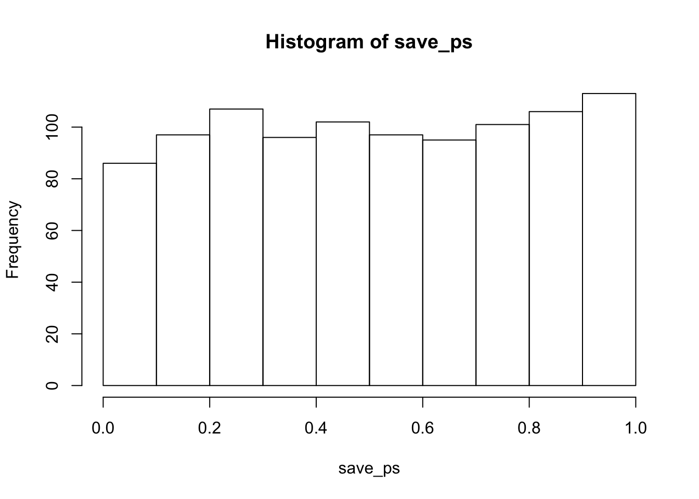
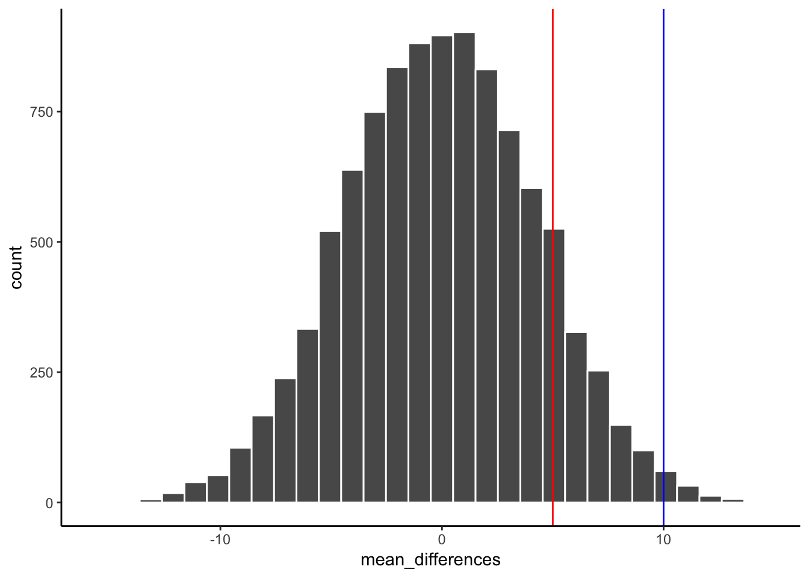
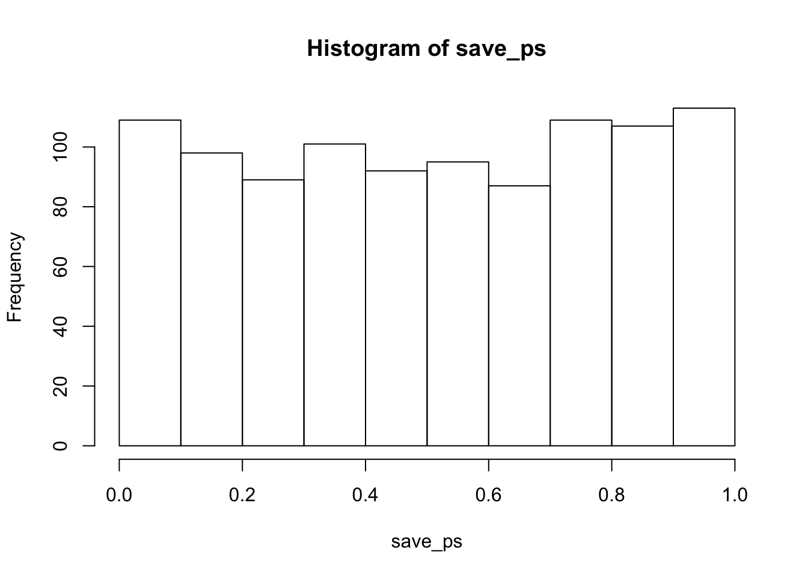
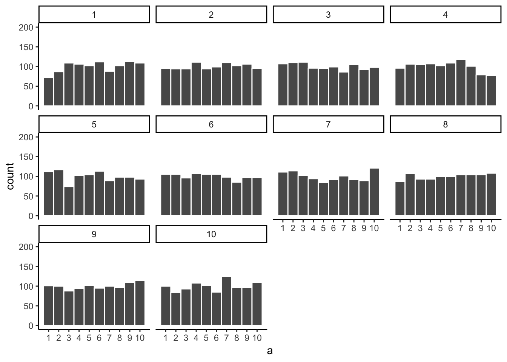
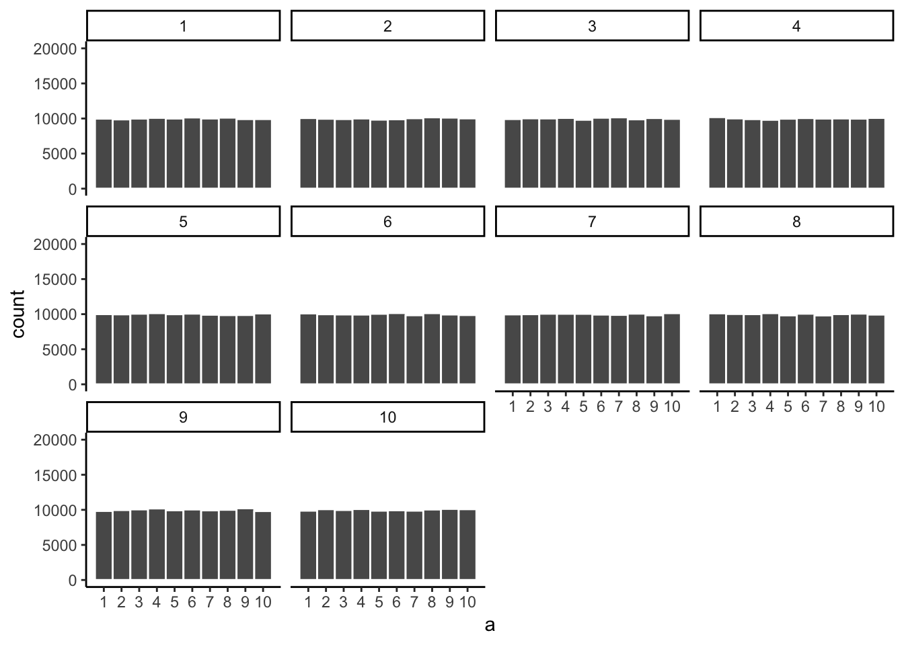
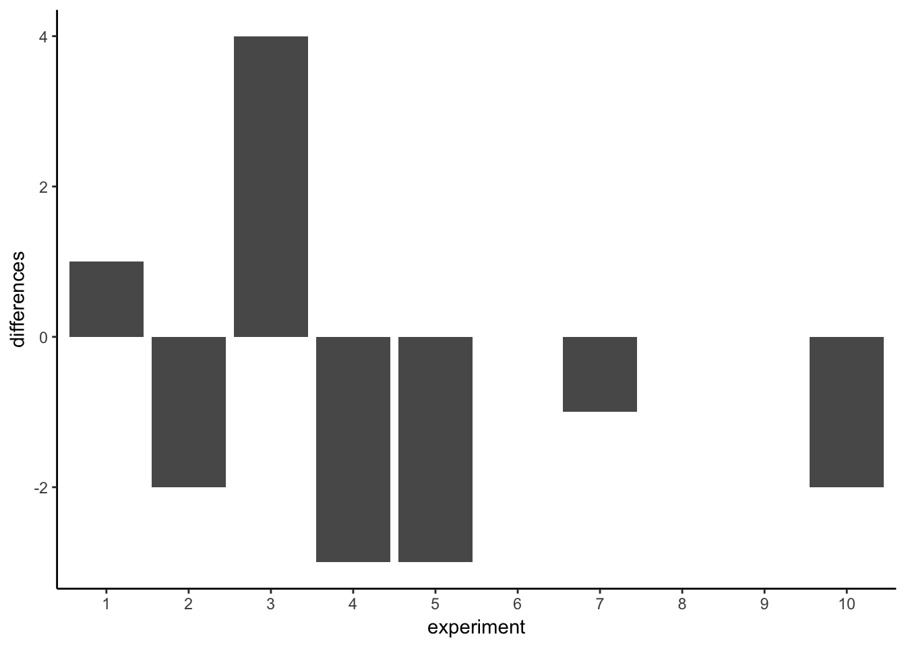
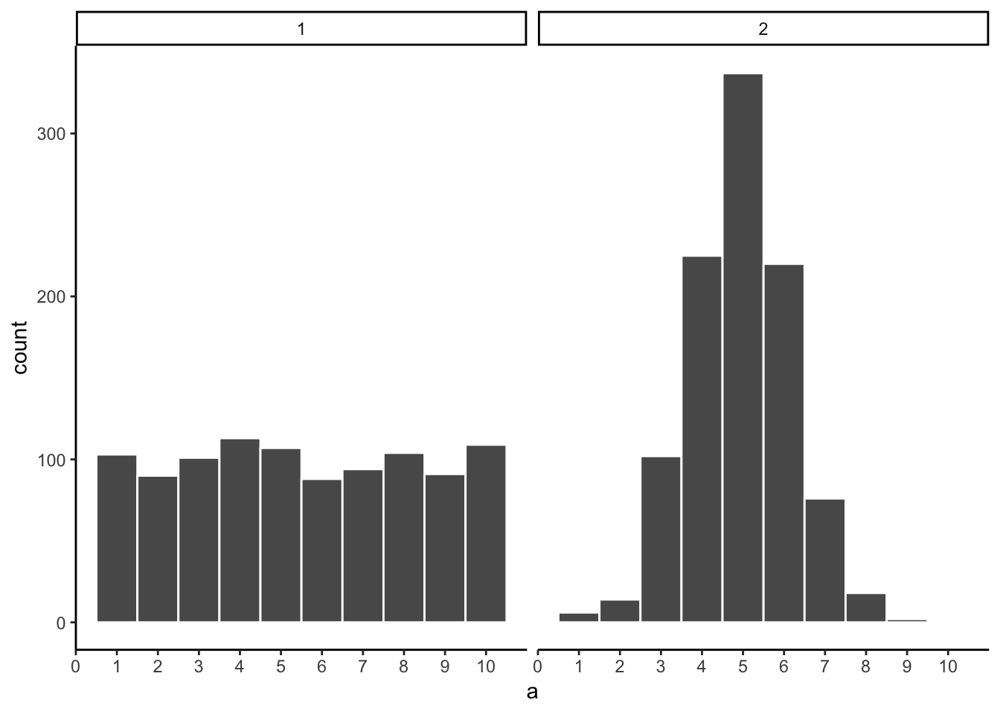
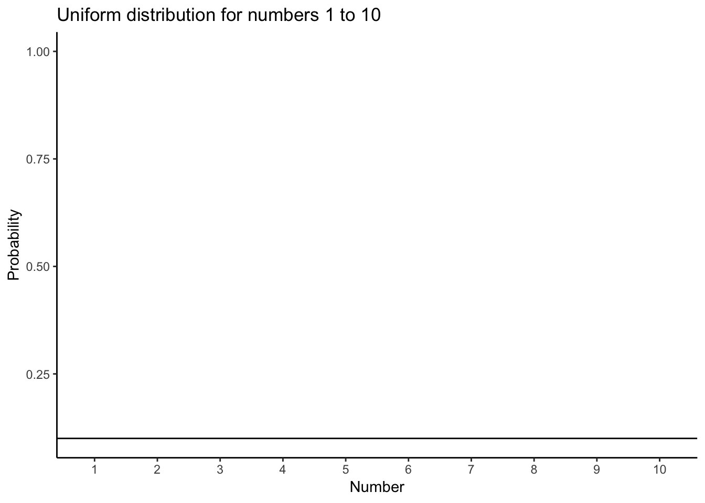
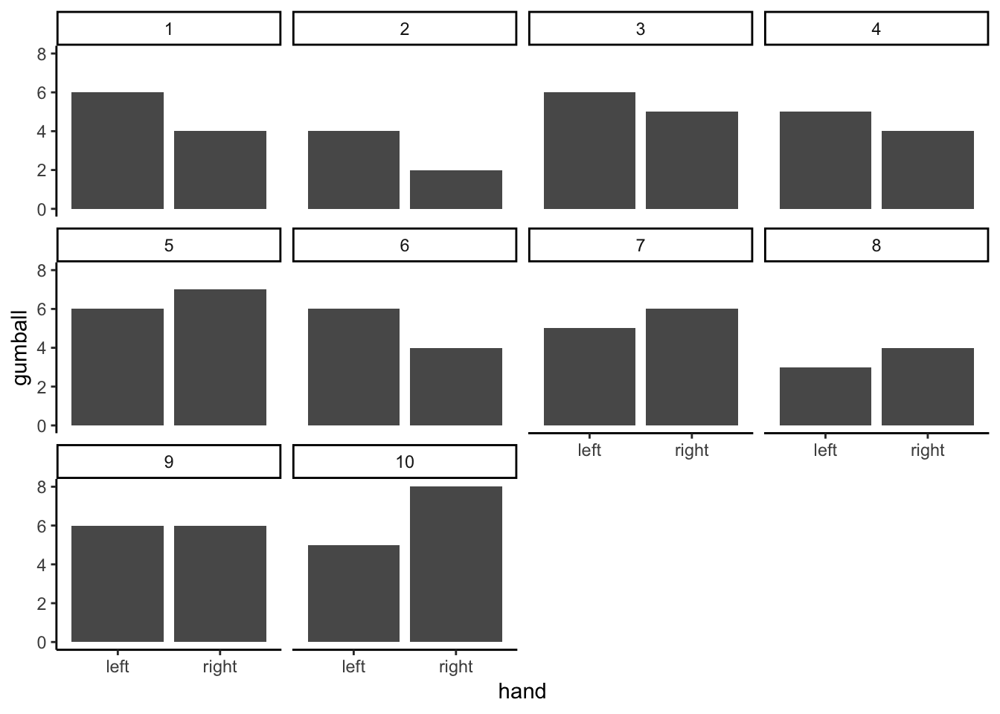
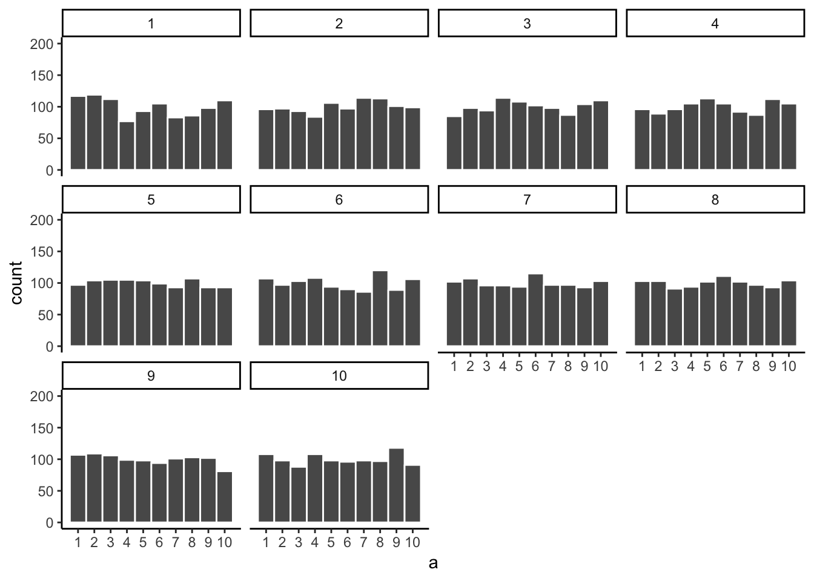

Chapter 4 Foundation for inference
So far we have been talking about describing data and looking possible relationships between things we measure. We began by talking about the problem of having too many numbers. So, we discussed how we could summarize big piles of numbers with descriptive statistics, and by looking at the data with graphs. We also looked at the idea of relationships between things. If one thing causes another thing, then if we measure how one thing goes up and down, we should find that other thing goes up and down, or does something at least systematically following the first thing. Finally, at the end of the last chapter on correlation, we showed how correlations, which imply a relationship between two things, are very difficult to interpret. Why? because an observed correlation can be caused by a hidden third variable, or simply be a spurious findings “caused” by random chance.
Fortunately, we have many more tools at our disposal that improve our ability to make inferences about causation. So, now we begin our journey into inferential statistics. The tools we use to make inferences about where our data came from.
In this chapter we provide some foundational ideas. We will stay mostly at a conceptual level, and use lots of simulations like we did in the last chapter. In the remaining chapters we formalize the intuitions built here to explain how some common inferential statitistics work.
4.1 Brief review of Experiments
In chapter one we talked a little bit about research methods and experiments. Experiments are a structured way of collecting data that can permit inferences about causality. If we wanted to know whether something like watching cats on youtube increases happiness we would need an experiment. We already found out that just finding a bunch of people and measuring number of hours watching cats, and level of happiness, and correlating the two will not permit inferences about causation. For one, the causal flow could be reversed. Maybe being happy causes people to watch more cat videos. We need an experiment.
An experiment has two parts. A manipulation and a measurement. The manipulation is under the control of the experimenter. Manipulations are also called independent variables. For example, we could manipulate how many cat videos people will watch, 1 hour versus 2 hours of cat videos. The measurement is the data that is collected. We could measure how happy people are after watching cat videos on a scale from 1 to 100. Measurements are also called dependent variables. So, in a basic experiment like the one above, we take measurements of happiness from people in one of two experimental conditions defined by the independent variable. Let’s say we ran 50 subjects. 25 subjects would be randomly assigned to watch 1 hour of cat videos, and the other 25 subjects would be randomly assigned to watch 2 hours of cat videos. We would measure happiness for each subject at the end of the videos. Then we could look at the data. What would we want to look at? Well, if watching cat videos cause change in happiness, then we would expect the measures of happiness for people watching 1 hour of cat videos to be different from the measures of happiness for people watching 2 hours of cat videos. If watching cat videos does not change happiness, then we would expect no differences in measures of happiness between conditions. Causal forces cause change, and the experiment is set up to detect the change.
Now we can state one overarching question, how do we know if the data changed between conditions? If we can be confident that there was a change between conditions, we can infer that our manipulation caused a changed in the measurement. If we cannot be confident there was a change, then we cannot infer that our manipulation caused a change in the measurement. We need to build some change detection tools so we can know a change when we find one.
“Hold on, if we are just looking for a change, wouldn’t that be easy to see by looking at the numbers and seeing if they are different, what’s so hard about that?”. Good question. Now we must take a detour. The short answer is that there will always be change in the data (remember variance).
4.2 The data came from a distribution
From now on when you see a bunch of numbers, you should wonder, “where did this numbers come from?”. To elaborate, this question means wondering about the things behind the numbers, causing some kinds of numbers to happen more than other kinds of numbers. To think about this question, we will veer off into the abstract world of distributions. A distribution a place where numbers can come from. The distribution sets the constraints. It determines what numbers are likely to occur, and what numbers are not likely to occur. Distributions are abstract ideas. But, they can be made concrete, and we can draw them with pictures. Let’s look at some.
4.2.1 Uniform distribution
A uniform distribution is completely flat, it looks like this:

Ok, so that doesn’t look like much. What is going on here? The y-axis is labelled probability, and it goes from 0 to 1. The x-xaxis is labelled Number, and it goes from one to 10. There is a horizontal line drawn straight through. This line tells you the probability of each number from 1 to 10. Notice the line is flat. This means all of the numbers have the same probability of occuring. More specifically, there are 10 numbers from 1 to 10 (1,2,3,4,5,6,7,8,9,10), and they all have an equal chance of occuring. 1/10 = .1, which is the probability indicated by the horizontal line.
“So what?”. Imagine that this uniform distribution is a number generating machine. It spits out numbers, but it spits out each number with the probability indicated by the line. If this distribution was going to start spitting out numbers, it would spit out 10% 1s, 10% 2s, 10% 3s, and so on, up to 10% 10s. Wanna see what that would look like? Let’s make it spit out 100 numbers
| 6 | 4 | 5 | 2 | 7 | 1 | 5 | 4 | 9 | 5 |
| 4 | 8 | 8 | 2 | 3 | 6 | 5 | 6 | 6 | 10 |
| 1 | 8 | 1 | 6 | 9 | 1 | 8 | 4 | 1 | 6 |
| 2 | 4 | 9 | 6 | 7 | 6 | 2 | 9 | 2 | 9 |
| 3 | 2 | 7 | 5 | 4 | 4 | 5 | 9 | 2 | 3 |
| 4 | 10 | 9 | 10 | 8 | 1 | 4 | 9 | 1 | 5 |
| 6 | 10 | 3 | 5 | 7 | 2 | 2 | 7 | 3 | 6 |
| 6 | 8 | 2 | 3 | 8 | 8 | 3 | 9 | 7 | 2 |
| 8 | 3 | 6 | 4 | 9 | 7 | 9 | 8 | 5 | 4 |
| 10 | 5 | 6 | 5 | 8 | 1 | 10 | 5 | 6 | 6 |
We used the uniform distribution to generate these numbers. Officially, we call this sampling from a distribution. Sampling is what you do at a grocery store when there is free food. You can keep taking more. However, if you take all of the samples, then what you have is called the population. We’ll talk more about samples and populations as we go along.
Because we used the uniformat distribution to create numbers, we already know where our numbers came from. However, we can still pretend for the moment that someone showed up at your door, showed you these numbers, and then you wondered where they came from. Can you tell just by looking at these numbers that they came from a uniform distribution? What would need to look at? Perhaps you would want to know if all of the numbers occur with roughly equal frequency, after all they should have right? That is, if each number had the same chance of occuring, we should see that each number occurs roughly the same number of times.
We already know what a histogram is, so we can put our numbers into a histogram and see what the counts look like. If all of the numbers occur with equal frequency, then each number should occur 10 times, because we sampled a total of 100 numbers. The histogram looks like this:

Uh oh, as you can see, not all of the number occured 10 times each. All of the bars are not the same height. This shows that randomly sampling numbers from this distribution does not guarantee that our numbers will be exactly like the distribution thehy came from. We can call this sampling error, or sampling variability.
4.2.2 Not all samples are the same, they are usually quite different
Let’s take a look at sampling error more closely. We will sample 20 numbers from the uniform. Here we should expect that each number between 1 and 10 occurs two times each. Let’s take 20 sample and make a histogram. And then, let’s do that 10 times. So we will be looking at 10 histograms, each showing us what the 10 different samples of twenty numbers looks like:

You might notice right away that none of the histograms are the same. Even though we are randomly taking 20 numbers from the very same uniform distribution, each sample of 20 numbers comes out different. This is sampling variability, or sampling error.
Looking at the above histograms shows us that figuring out where our numbers came from can be difficult. In the real world, our measurements are samples. We usually only have the luxury of getting one sample of measurements, rather than repeating our own measurements 10 times or more. If you look at the histograms, you will see that some of them look like they could have come from the uniform distribution: most of the bars are near two, and they all fall kind of on a flat line. But, if you happen to look at a different sample, you might see something that is very bumpy, with some numbers happening way more than others. This could suggest to you that those numbers did not come from a uniform distribution (they’re just too bumpy). But let me remind you, all of these samples came from a uniform distribution, this is what samples from that distribution look like. This is what chance does to samples, it makes the individual data points noisy.
4.2.3 Large samples are more like the distribution they came from
Let’s refresh the question. Which of these two samples do you think came from a uniform distribution?

The answer is that they both did. But, neither of them look like they did.
Can we improve things, and make it easier to see if a sample came from a uniform distribution? Yes, we can. All we need to do is increase the sample-size. We will often use the letter n to refer to sample-size. N is the number of observations in the sample.
So let’s increase the number of observations in each sample from 20 to 100. We will again create 10 samples (each with 100 observations), and make histrograms for each of them. All of these samples will be drawn from the very same uniform distribution. This, means we should expect each number from 1 to 10 to occur about 10 times in each sample. Here are the histograms:

Again, most of these histograms don’t look very flat, and all of the bars seem to be going up or down, and they are not exactly at 10 each. So, we are still dealine with sampling error. It’s a pain. It’s always there.
Let’s bump it up to 1000 observations per sample. Now we should expect every number to appear about 100 times each. What happens?

Each of these histograms are starting to flatten out. The bars are still not perfectly at 100, because there is still sampling error (there always will be). But, if you found a histrogram that looked flat and knew that the sample contained many observations, you might be more confident that those numbers came from a uniform distribution.
Just for fun let’s make the samples really big. Say 100,000 observations per sample. Here, we should expect that each number occurs about 10,000 times each. What happens?

Now we see that all of our samples start to look the same. They all have 100,000 observations, and this gives chance enough opportunity to equally distribute the numbers, roughly making sure that they all occur very close to the same amount of times. As you can see, the bars are all very close to 10,000, where they should be if the sample came from a uniform distribution.
Pro tip: The pattern behind a sample will tend to stabilize as sample-size increases. Small samples will have all sorts of patterns because of sampling error (chance).
Before getting back to experiments, let’s ask two more questions. First, which of these two samples do you think came from a uniform distribution? I will tell you that each of these samples had 20 observations each.

If you are not confident in the answer, this is because sampling error (randomness) is fuzzing with the histograms.
Here is the very same question, only this time we will take 1,000 observations for each sample. Which one do you think came from a uniform distribution, which one did not?

Now that we have increased N, we can see the pattern in each sample becomes more obvious. The histogram for sample 1 has bars near 100, not perfectly flat, but it resembles a uniform distribution. The histogram for sample 2 does not look flat at all. Instead, there the number five appears most of the time, and numbers on either side of five happen less and less.
Congratulations to Us! We have just made some statistical inferences without using formulas!
“We did?”. Yes, by looking at our two samples we have inferred that sample 2 did not come from a uniform distribution. We have also inferred that sample 1 could have come froma uniform distribution. Fantastic. This is really all we will be doing for the rest of the course. We will be looking at some numbers, wondering where they came from, then we will arrange the numbers in such a way so that we can make an inference about where they came from. That’s it.
4.3 Playing with distributions
talk about a few different distribution. Embed shiny app
SHINY APP here
4.4 Is there a difference?
Let’s get back to experiments. In an experiment we want to know if our independent variable (our manipulation) causes a change in our dependent variable (measurement). If this occurs, then we will expect to see some differences in our measurement as a function of manipulation.
Consider the light switch example:
Light Switch Experiment: You manipulate the switch up (condition 1 of independent variable), light goes on (measurement). You manipulate the switch down (condition 2 of independent variable), light goes off (another measurement). The measurement (light) changes (goes off and on) as a function of the manipulation (moving switch up or down).
You can see the change in measurement between the conditions, it is as obvious as night and day. So, when you conduct a manipulation, and can see the difference (change) in your measure, you can be pretty confident that your manipulation is causing the change.
note: to be cautious we can say “something” about your manipulation is causing the change, it might not be what you think it is if your manipulation is very complicated and involves lots of moving parts.
4.4.1 Chance can produce differences
Do you think random chance can produce the appearance of differences, even when they really aren’t any? I hope so. We have already shown that the process of sampling numbers from a distribution is chancy process that produces different samples. Different samples are different, so yes, chance can produce differences. This can muck up our interpretation of experiments.
Let’s conduct a fictitious experiment where we expect to find no differences, because we will manipulate something that shouldn’t do anything. Her’s the set-up:
You are the experimenter standing in front of a gumball machine. It is very big, has thousands of gumballs. 50% of the gumballs are green, and 50% are red. You want to find out if picking gumballs with your right hand vs. your left hand will cause you to pick more green gumballs. Plus, you will be blindfolded the entire time. The independent variable is Hand: right hand vs. left hand. The dependent variable is the measurement of the color of each gumball.
You run the experiment as follows. 1) put on blind fold. 2) pick 10 gumballs randomly with left hand, set them aside. 3) pick 10 gumballs randomly with right hand, set them aside. 4) count the number of green and red gumballs chosen by your left hand, and count the number of green and red gumballs chosedn by your right hand. Hopefully you will agree that your hands will not be able to tell the difference between the gumballs. If you don’t agree, we will further stipulate the gumballs are completely identical in every way except their color, so it would be impossible to tell them apart using your hands. So, what should happen in this experiment?
“Umm, maybe you get 5 red gum balls and 5 green balls from your left hand, and also from your right hand?”. Sort of yes, this is what you would usually get. But, it is not all that you can get. Here is some data showing what happened from one pretend experiment:
| hand | gumball |
|---|---|
| left | 1 |
| left | 0 |
| left | 0 |
| left | 1 |
| left | 0 |
| left | 1 |
| left | 0 |
| left | 0 |
| left | 1 |
| left | 0 |
| right | 1 |
| right | 1 |
| right | 0 |
| right | 0 |
| right | 1 |
| right | 0 |
| right | 0 |
| right | 0 |
| right | 0 |
| right | 0 |
“What am I looking at here”. This is a long-format table. Each row is one gumball. The first column tells you what hand was used. The second column tells you what kind of gumball. We will say 1s stand for green gum balls, and 0s stand for red gumballs. So, did your left hand cause you to pick more green gumballs than your right hand?
It would be easier to look at the data using a bar graph. To keep things simple, we will only count green gumablls (the other gumballs must be red). So, all we need to do is sum up the 1s. The 0s won’t add anything.

Oh look, the bars are not the same. One hand picked more green gum balls than the other. Does this mean that one of your hands secretly knows how to find green gumballs? No, it’s just another case of sampling error, that thing we call luck or chance. The difference here is caused by chance, not by the manipulation (which hand you use). Major problem for inference alert. We run experiments to look for differences so we can make inferences about whether our manipulations cause change in our measures. Now we know that we can find differences by chance. How can we know if a difference is real, or just caused by chance?
4.4.2 Differences due to chance can be simulated
Remember when we showed that chance can produce correlations. We also showed that chance is restricted in its ability to produce correlations. For example, chance more often produces weak correlations than strong correlations. Remember the window of chance? We found out before that correlations falling outside the window of chance were very unlikely. We can do the same thing for differences. Let’s find out just what chance can do in our experiment. Once we know what chance is capable of we will be in a better position to judge whether our manipulation caused a difference, or whether it could have been chance.
The first thing to do is pretend you conduct the gumball experiment 10 times in a row. This will produce 10 different sets of results. For each of them we can make a bar graph, and look at whether the left hand chose more green gumballs than red gumballs. It looks like this:

These 10 experiments give us a better look at what chance can do. It should also mesh well with your expectations. If everything is left up to chance (as we have made it so), then sometimes your left hand will choose more green balls, sometimes your right hand will choose more green gumballs, and sometimes they will choose the same amount of gumballs. Right? Right.
4.5 Chance makes some differences more likely than others
Ok, we have seen that chance can produce differences here. But, we still don’t have a good idea about what chance usually does and doesn’t do. For example, if we could find the window of opportunity here, we would be able find out that chance usually does not produce differences of a certain large size. If we knew what the size was, then if we ran experiment and our difference was bigger than what chance can do, we could be confident that chance did not produce our difference.
Let’s use the word difference some more, because it will be helpful. In fact, let’s think about our measure of green balls in terms of a difference. For example, in each experiment we counted the green balls for the left and right hand. What we really want to know is if there is a difference between them. So, we can calculate the difference score. Let’s decide that difference score = # of green gumballs in left hand - # of green gumballs in right hand. Now, we can redraw the 10 bar graphs from above. But this time we will only see one bar for each experiment. This bar will show the differenced in number of green gumballs.

Missing bars mean that there were an equal number of green gumballs chosen by the left and righ hands (difference score is 0). A positive value means that more green gumballs were chosen by the left than right hand. A negative value means that more green gumballs were chosen by the right than left hand. Note that if we decided (and we get to decide) to calculate the difference in reverse (right hand - left hand), ths signs of the differences scores would flip around.
We are starting to see more of the differences that chance can produce. The difference scores are mostly between -2 to +2. We could get an even better impression by running this pretend experiment 100 times instead of only 10 times. How about we do that.
hand<-rep(rep(c("left","right"),each=10),100)
experiment<-rep(1:100,each=20)
gumball<-rbinom(20*100,1,.5)
df<-data.frame(experiment,hand,gumball)
sum_df<-aggregate(gumball~experiment*hand,df,sum)
differences<-sum_df[sum_df$hand =="left",]$gumball-
sum_df[sum_df$hand =="right",]$gumball
dif_df<-data.frame(experiment=c(1:100),differences)
dif_df$experiment<-as.factor(dif_df$experiment)
ggplot(dif_df,aes(y=differences,x=experiment))+
geom_bar(stat="identity")+
theme_classic()+
ylab("differences")
OOf, we just ran so many simulated expeirments that the x-axis is unreadable, but it goes from 1 to 100. Each bar represents the difference of number of green balls chosen randomly by the left or right hand. Beginning to notice anything? Look at the y-axis, this shows the size of the difference. Yes, there are lots of bars of different sizes, this shows us that many kinds of differences do occur by chance. However, the y-axis is also restricted. It does not go from -10 to +10. Big differences greater than 5 or -5 don’t happen very often.
Now that we have a method for simulating differences due to chance, let’s run 10,000 simulated experiments. But, instead of plotting the differences in a bar graph for each experiment, how about we look at the histogram of difference scores. This will give us a clearer picture about which differences happen most often, and which ones do not. This will be another window into chance. The chance window of differences.
hand<-rep(rep(c("left","right"),each=10),10000)
experiment<-rep(1:10000,each=20)
gumball<-rbinom(20*10000,1,.5)
df<-data.frame(experiment,hand,gumball)
sum_df<-aggregate(gumball~experiment*hand,df,sum)
differences<-sum_df[sum_df$hand =="left",]$gumball-
sum_df[sum_df$hand =="right",]$gumball
hist(differences,breaks=seq(-10,10,1))
Our computer simulation allows us to force chance to operate hundreds of times, each time it produces a difference. We record the difference, then at the end of the simulation we plot the histogram of the differences. The histogram begins to show us the where the differences came from. Remember the idea that numbers come from a distribution, and the distribution says how often each number occurs. We are looking at one of these distributions. It is showing us that chance produces some differences more often than others. First, chance usually produces 0 differences, that’s the biggest bar in the middle. Chance also produces larger differences, but as the differences get larger (positive or negative), they occur less frequently. The shape of this histogram is your chance window, it tells you what chance can do, it tells you what chance usually does, and what it usually does not do.
You can use this chance window to help you make inferences. If you ran yourself in the gumball experiment and found that your left hand chose 2 more green gumballs than red gumballs, would you conclude that you left hand was special, and caused you to choose more green gumballs? Hopefully not. You could look at the chance window and see that differences of size +2 do happen fairly often by chance alone. You should not be surprised if you got a luck +2 difference. However, what if your left chose 5 more green gumballs than red gumballs. Well, chance doesn’t do this very often, you might think something is up with your left hand. If you got a whopping 9 more green gumballs than red gumballs, you might really start to wonder. This is the kind of thing that could happen (it’s possible), but virtually never happens. When you get things that almost never happen by chance, you can be more confident that the difference reflects a causal force that is not chance.
4.6 Sampling distribution of the sample means
“Oh no, what is the sample distribution of the sample means? Is that even allowed in English?”. Yes, unfortunately, this is allowed. The sampling distribution of the sample means is the next most important thing you will need to understand. IT IS SO IMPORTANT THAT IT IS NECESSARY TO USE ALL CAPS. It is only confusing at first because it’s long and uses sampling and sample in the same phrase.
Don’t worry, we’ve ben prepping you for this. You know what a distribution is right? It’s where numbers comes from. It makes some numbers occur more or less, or the same as other numbers. You know what a sample is right? It’s the numbers we take from a distribution. So, what could the sampling distribution of the sample means refer to? First, what do you think the sample means refers to? Well, if you took a sample of numbers, you would have a bunch of numbers…then, you could compute the mean of those numbers. The sample mean is the mean of the numbers in the sample. That is all. So, what is this distribution you speak of? Well, what if you took a bunch of samples of, put one here, put one there, put some other ones other places. You have a lot of different samples of numbers. You could compute the mean for each them. Then you would have a bunch of means. What do those means look like? Well, if you put them in a histogram, you could find out. If you did that, you would be looking at (roughly) a distribution, AKA the sampling distribution of the sample means.
“I’m following along sort of, why would I want to do this instead of watching netflix…”. Because, the sampling distribution of the sample means gives you another window into chance. A very useful one that you can control, just like your remote control, by pressing the right design buttons.
4.7 Seeing the pieces
To make a sampling distribution of the sample means, we just need the following:
- A distribution to take numbers from
- A bunch of different samples from the distribution
- The means of each of the samples
- Get all of the sample means, and plot them in a histogram
| Question for yourself: What do you think the sampling distribution of the sample means will look like? Will it tend to look the shape of the distribution that the samples came from? Or not? Good question, think about it. |
Let’s do those four things. We already know about the uniform distribution. So, let’s use that for fun. Remember, it looks like this if we are sampling from the set of integers from 1 to 10:

Ok, now let’s take a bunch of samples from that distribution. We will set our sample-size to 20. Here is a histogram of 10 of from that bunch:
## `stat_bin()` using `bins = 30`. Pick better value with `binwidth`.
Ok, what have we got here? We have 10 different samples. Each sample has 20 observations and these are summarized in each of the 10 histograms. Each histogram has a red line. The red line shows you where the mean of each sample is located. So, we have found the sample means for the 10 different samples from a uniform distribution.
First question. Are the sample means all the same? The answer is no. They are all kind of similar to each other though, they are all around five plus or minus a few numbers. This is interesting. Although all of our samples look pretty different from one another, the means of our samples look more similar than different.
Second question. What should we do with the means of our samples? Well, how about we collect them them all, and then plot a histogram of them. This would allow us to see what the distribution of the sample means looks like. The next histogram is just this. Except, rather than taking 10 samples, we will take 10,000 samples. For each of them we will compute the means. So, we will have 10,000 means. This is the histogram of the sample means:
## `stat_bin()` using `bins = 30`. Pick better value with `binwidth`.
Example 2.1 Suppose your professor splits the students in class into two groups: students on the left and students on the right. If \(\hat{p}_{_L}\) and \(\hat{p}_{_R}\) represent the proportion of students who own an Apple product on the left and right, respectively, would you be surprised if \(\hat{p}_{_L}\) did not exactly equal \(\hat{p}_{_R}\)?
While the proportions would probably be close to each other, they are probably not exactly the same. We would probably observe a small difference due to chance.
Guided Practice 2.1
If we don’t think the side of the room a person sits on in class is related to whether the person owns an Apple product, what assumption are we making about the relationship between these two variables?2
Studying randomness of this form is a key focus of statistics. In this chapter, we’ll explore this type of randomness in the context of several applications, and we’ll learn new tools and ideas that will be applied throughout the rest of the book.
4.8 Randomization case study: gender discrimination
We consider a study investigating gender discrimination in the 1970s, which is set in the context of personnel decisions within a bank.3 The research question we hope to answer is, “Are females discriminated against in promotion decisions made by male managers?”
4.8.1 Variability within data
The participants in this study were 48 male bank supervisors attending a management institute at the University of North Carolina in 1972. They were asked to assume the role of the personnel director of a bank and were given a personnel file to judge whether the person should be promoted to a branch manager position. The files given to the participants were identical, except that half of them indicated the candidate was male and the other half indicated the candidate was female. These files were randomly assigned to the subjects.
Guided Practice 2.1
Is this an observational study or an experiment? How does the type of study impact what can be inferred from the results?4
For each supervisor we recorded the gender associated with the assigned file and the promotion decision. Using the results of the study summarized in Table @ref(tab:discriminationResults], we would like to evaluate if females are unfairly discriminated against in promotion decisions. In this study, a smaller proportion of females are promoted than males (0.583 versus 0.875), but it is unclear whether the difference provides convincing evidence that females are unfairly discriminated against.
l l cc rr & &
& & promoted & not promoted & Total &
& male & 21 & 3 & 24
[0pt]gender & female & 14 & 10 & 24
& Total & 35 & 13 & 48
[discriminationResults]
Example 2.4 Statisticians are sometimes called upon to evaluate the strength of evidence. When looking at the rates of promotion for males and females in this study, why might we be tempted to immediately conclude that females are being discriminated against?
The large difference in promotion rates (58.3% for females versus 87.5% for males) suggest there might be discrimination against women in promotion decisions. However, we cannot yet be sure if the observed difference represents discrimination or is just from random chance. Generally there is a little bit of fluctuation in sample data, and we wouldn’t expect the sample proportions to be exactly equal, even if the truth was that the promotion decisions were independent of gender.
Example 2.4 is a reminder that the observed outcomes in the sample may not perfectly reflect the true relationships between variables in the underlying population. Table @ref(tab:discriminationResults] shows there were 7 fewer promotions in the female group than in the male group, a difference in promotion rates of 29.2% \(\left( \frac{21}{24} - \frac{14}{24} = 0.292 \right)\). This observed difference is what we call a point estimate of the true effect. The point estimate of the difference is large, but the sample size for the study is small, making it unclear if this observed difference represents discrimination or whether it is simply due to chance. We label these two competing claims, \(H_0\) and \(H_A\):
\(H_0\): Null hypothesis. The variables gender and decision are independent. They have no relationship, and the observed difference between the proportion of males and females who were promoted, 29.2%, was due to chance.
\(H_A\): Alternative hypothesis. The variables gender and decision are not independent. The difference in promotion rates of 29.2% was not due to chance, and equally qualified females are less likely to be promoted than males.
Hypothesis Testing
These hypotheses are part of what is called a hypothesis test. A hypothesis test is a statistical technique used to evaluate competing claims using data. Often times, the null hypothesis takes a stance of no difference or no effect. If the null hypothesis and the data notably disagree, then we will reject the null hypothesis in favor of the alternative hypothesis.
Don’t worry if you aren’t a master of hypothesis testing at the end of this section. We’ll discuss these ideas and details many times in this chapter.
What would it mean if the null hypothesis, which says the variables gender and decision are unrelated, is true? It would mean each banker would decide whether to promote the candidate without regard to the gender indicated on the file. That is, the difference in the promotion percentages would be due to the way the files were randomly divided to the bankers, and the randomization just happened to give rise to a relatively large difference of 29.2%.
Consider the alternative hypothesis: bankers were influenced by which gender was listed on the personnel file. If this was true, and especially if this influence was substantial, we would expect to see some difference in the promotion rates of male and female candidates. If this gender bias was against females, we would expect a smaller fraction of promotion recommendations for female personnel files relative to the male files.
We will choose between these two competing claims by assessing if the data conflict so much with \(H_0\) that the null hypothesis cannot be deemed reasonable. If this is the case, and the data support \(H_A\), then we will reject the notion of independence and conclude that these data provide strong evidence of discrimination.
4.8.2 Simulating the study
Table ?? shows that 35 bank supervisors recommended promotion and 13 did not. Now, suppose the bankers’ decisions were independent of gender. Then, if we conducted the experiment again with a different random assignment of files, differences in promotion rates would be based only on random fluctuation. We can actually perform this randomization, which simulates what would have happened if the bankers’ decisions had been independent of gender but we had distributed the files differently.5
In this simulation, we thoroughly shuffle 48 personnel files, 24 labeled and 24 labeled , and deal these files into two stacks. We will deal 35 files into the first stack, which will represent the 35 supervisors who recommended promotion. The second stack will have 13 files, and it will represent the 13 supervisors who recommended against promotion. Then, as we did with the original data, we tabulate the results and determine the fraction of and who were promoted.
Since the randomization of files in this simulation is independent of the promotion decisions, any difference in the two fractions is entirely due to chance. Table ?? show the results of such a simulation.
l l cc rr & &
& & promoted & not promoted & Total &
& male & 18 & 6 & 24
[0pt] & female & 17 & 7 & 24
& Total & 35 & 13 & 48
[discriminationRand1]
4.8.3 Checking for independence
We computed one possible difference under the null hypothesis in Guided Practice 2.5, which represents one difference due to chance. While in this first simulation, we physically dealt out files, it is much more efficient to perform this simulation using a computer. Repeating the simulation on a computer, we get another difference due to chance: -0.042. And another: 0.208. And so on until we repeat the simulation enough times that we have a good idea of what represents the distribution of differences from chance alone. Figure 4.1 shows a plot of the differences found from 100 simulations, where each dot represents a simulated difference between the proportions of male and female files recommended for promotion.
Figure 4.1: A stacked dot plot of differences from 100 simulations produced under the null hypothesis, \(H_0\), where and decision are independent. Two of the 100 simulations had a difference of at least 29.2%, the difference observed in the study, and are shown as solid dots.
Note that the distribution of these simulated differences is centered around 0. Because we simulated differences in a way that made no distinction between men and women, this makes sense: we should expect differences from chance alone to fall around zero with some random fluctuation for each simulation.
Example 2.6 How often would you observe a difference of at least 29.2% (0.292) according to Figure 4.1? Often, sometimes, rarely, or never?
It appears that a difference of at least 29.2% due to chance alone would only happen about 2% of the time according to Figure 4.1. Such a low probability indicates that observing such a large difference from chance is rare.
The difference of 29.2% is a rare event if there really is no impact from listing gender in the candidates’ files, which provides us with two possible interpretations of the study results:
\(H_0\): Null hypothesis. Gender has no effect on promotion decision, and we observed a difference that is so large that it would only happen rarely.
\(H_A\): Alternative hypothesis. Gender has an effect on promotion decision, and what we observed was actually due to equally qualified women being discriminated against in promotion decisions, which explains the large difference of 29.2%.
When we conduct formal studies, we reject a skeptical position if the data strongly conflict with that position.7 In our analysis, we determined that there was only a $$2% probability of obtaining a sample where $$29.2% more males than females get promoted by chance alone, so we conclude the data provide strong evidence of gender discrimination against women by the supervisors. In this case, we reject the null hypothesis in favor of the alternative.
Statistical inference is the practice of making decisions and conclusions from data in the context of uncertainty. Errors do occur, just like rare events, and the data set at hand might lead us to the wrong conclusion. While a given data set may not always lead us to a correct conclusion, statistical inference gives us tools to control and evaluate how often these errors occur. Before getting into the nuances of hypothesis testing, let’s work through another case study.
4.9 Randomization case study: opportunity cost
How rational and consistent is the behavior of the typical American college student? In this section, we’ll explore whether college student consumers always consider an obvious fact: money not spent now can be spent later.
In particular, we are interested in whether reminding students about this well-known fact about money causes them to be a little thriftier. A skeptic might think that such a reminder would have no impact. We can summarize these two perspectives using the null and alternative hypothesis framework.
\(H_0\): Null hypothesis. Reminding students that they can save money for later purchases will not have any impact on students’ spending decisions.
\(H_A\): Alternative hypothesis. Reminding students that they can save money for later purchases will reduce the chance they will continue with a purchase.
In this section, we’ll explore an experiment conducted by researchers that investigates this very question for students at a university in the southwestern United States.8
4.9.1 Exploring the data set before the analysis
One-hundred and fifty students were recruited for the study, and each was given the following statement:
Imagine that you have been saving some extra money on the side to make some purchases, and on your most recent visit to the video store you come across a special sale on a new video. This video is one with your favorite actor or actress, and your favorite type of movie (such as a comedy, drama, thriller, etc.). This particular video that you are considering is one you have been thinking about buying for a long time. It is available for a special sale price of $14.99.
What would you do in this situation? Please circle one of the options below.
Half of the 150 students were randomized into a control group and were given the following two options:
(A) Buy this entertaining video.
(B) Not buy this entertaining video.
The remaining 75 students were placed in the treatment group, and they saw a slightly modified option (B):
(A) Buy this entertaining video.
(B) Not buy this entertaining video. Keep the $14.99 for other purchases.
Would the extra statement reminding students of an obvious fact impact the purchasing decision? Table @ref(tab:OpportunityCostTable] summarizes the study results.
l cc rr &
& buy DVD & not buy DVD & Total &
control group & 56 & 19 & 75
treatment group & 41 & 34 & 75
Total & 97 & 53 & 150
[OpportunityCostTable]
It might be a little easier to review the results using row proportions, specifically considering the proportion of participants in each group who said they would buy or not buy the DVD. These summaries are given in Table @ref(tab:OpportunityCostTableRowProp].
l cc rr &
& buy DVD & not buy DVD & Total &
control group & 0.747 & 0.253 & 1.000
treatment group & 0.547 & 0.453 & 1.000
Total & 0.647 & 0.353 & 1.000
[OpportunityCostTableRowProp]
We will define a success in this study as a student who chooses not to buy the DVD.9 Then, the value of interest is the change in DVD purchase rates that results by reminding students that not spending money now means they can spend the money later. We can construct a point estimate for this difference as
\[\begin{aligned} \hat{p}_{trmt} - \hat{p}_{ctrl} = \frac{34}{75} - \frac{19}{75} = 0.453 - 0.253 = 0.200\end{aligned}\]
The proportion of students who chose not to buy the DVD was 20% higher in the treatment group than the control group. However, is this result statistically significant? In other words, is a 20% difference between the two groups so prominent that it is unlikely to have occurred from chance alone?
4.9.2 Results from chance alone
The primary goal in this data analysis is to understand what sort of differences we might see if the null hypothesis were true, i.e. the treatment had no effect on students. For this, we’ll use the same procedure we applied in Section 4.8: randomization.
Let’s think about the data in the context of the hypotheses. If the null hypothesis (\(H_0\)) was true and the treatment had no impact on student decisions, then the observed difference between the two groups of 20% could be attributed entirely to chance. If, on the other hand, the alternative hypothesis (\(H_A\)) is true, then the difference indicates that reminding students about saving for later purchases actually impacts their buying decisions.
Just like with the gender discrimination study, we can perform a statistical analysis. Using the same randomization technique from the last section, let’s see what happens when we simulate the experiment under the scenario where there is no effect from the treatment.
While we would in reality do this simulation on a computer, it might be useful to think about how we would go about carrying out the simulation without a computer. We start with 150 index cards and label each card to indicate the distribution of our response variable: decision. That is, 53 cards will be labeled “not buy DVD” to represent the 53 students who opted not to buy, and 97 will be labeled “buy DVD” for the other 97 students. Then we shuffle these cards throughly and divide them into two stacks of size 75, representing the simulated treatment and control groups. Any observed difference between the proportions of “not buy DVD” cards (what we earlier defined as success) can be attributed entirely to chance.
Example 2.7 If we are randomly assigning the cards into the simulated treatment and control groups, how many “not buy DVD” cards would we expect to end up with in each simulated group? What would be the expected difference between the proportions of “not buy DVD” cards in each group?
Answer: Since the simulated groups are of equal size, we would expect \(53 / 2 = 26.5\), i.e. 26 or 27, “not buy DVD” cards in each simulated group, yielding a simulated point estimate of 0%. However, due to random fluctuations, we might actually observe a number a little above or below 26 and 27.
The results of a randomization from chance alone is shown in Table ??. From this table, we can compute a difference that occurred from chance alone:
\[\begin{aligned} \hat{p}_{trmt, simulated} - \hat{p}_{ctrl, simulated} = \frac{24}{75} - \frac{29}{75} = 0.32 - 0.387 = - 0.067\end{aligned}\]
l cc rr &
& buy DVD & not buy DVD & Total &
simulated-control group & 46 & 29 & 75
simulated-treatment group & 51 & 24 & 75
Total & 97 & 53 & 150
[OpportunityCostTableSimulated]
Just one simulation will not be enough to get a sense of what sorts of differences would happen from chance alone. We’ll simulate another set of simulated groups and compute the new difference: 0.013. And again: 0.067. And again: -0.173. We’ll do this 1,000 times. The results are summarized in a dot plot in Figure 4.2, where each point represents a simulation. Since there are so many points, it is more convenient to summarize the results in a histogram such as the one in Figure 4.3, where the height of each histogram bar represents the fraction of observations in that group.
Figure 4.2: A stacked dot plot of 1,000 chance differences produced under the null hypothesis, \(H_0\). Six of the 1,000 simulations had a difference of at least 20%, which was the difference observed in the study.
Figure 4.3: A histogram of 1,000 chance differences produced under the null hypothesis, \(H_0\). Histograms like this one are a more convenient representation of data or results when there are a large number of observations.
If there was no treatment effect, then we’d only observe a difference of at least +20% about 0.6% of the time, or about 1-in-150 times. That is really rare! Instead, we will conclude the data provide strong evidence there is a treatment effect: reminding students before a purchase that they could instead spend the money later on something else lowers the chance that they will continue with the purchase. Notice that we are able to make a causal statement for this study since the study is an experiment.
4.10 Hypothesis testing
In the last two sections, we utilized a hypothesis test, which is a formal technique for evaluating two competing possibilities. In each scenario, we described a null hypothesis, which represented either a skeptical perspective or a perspective of no difference. We also laid out an alternative hypothesis, which represented a new perspective such as the possibility that there has been a change or that there is a treatment effect in an experiment.
Null and alternative hypotheses
The null hypothesis (\(H_0\)) often represents either a skeptical perspective or a claim to be tested. The alternative hypothesis (\(H_A\)) represents an alternative claim under consideration and is often represented by a range of possible values for the value of interest.
The hypothesis testing framework is a very general tool, and we often use it without a second thought. If a person makes a somewhat unbelievable claim, we are initially skeptical. However, if there is sufficient evidence that supports the claim, we set aside our skepticism. The hallmarks of hypothesis testing are also found in the US court system.
4.10.1 Hypothesis testing in the US court system
Example 2.8 A US court considers two possible claims about a defendant: she is either innocent or guilty. If we set these claims up in a hypothesis framework, which would be the null hypothesis and which the alternative?
The jury considers whether the evidence is so convincing (strong) that there is no reasonable doubt regarding the person’s guilt. That is, the skeptical perspective (null hypothesis) is that the person is innocent until evidence is presented that convinces the jury that the person is guilty (alternative hypothesis).
Jurors examine the evidence to see whether it convincingly shows a defendant is guilty. Notice that if a jury finds a defendant not guilty, this does not necessarily mean the jury is confident in the person’s innocence. They are simply not convinced of the alternative that the person is guilty.
This is also the case with hypothesis testing: even if we fail to reject the null hypothesis, we typically do not accept the null hypothesis as truth. Failing to find strong evidence for the alternative hypothesis is not equivalent to providing evidence that the null hypothesis is true.
4.10.2 p-value and statistical significance
In Section 4.8 we encountered a study from the 1970’s that explored whether there was strong evidence that women were less likely to be promoted than men. The research question – are females discriminated against in promotion decisions made by male managers? – was framed in the context of hypotheses:
\(H_0\): Gender has no effect on promotion decisions.
\(H_A\): Women are discriminated against in promotion decisions.
The null hypothesis (\(H_0\)) was a perspective of no difference. The data, summarized on page , provided a point estimate of a 29.2% difference in recommended promotion rates between men and women. We determined that such a difference from chance alone would be rare: it would only happen about 2 in 100 times. When results like these are inconsistent with \(H_0\), we reject \(H_0\) in favor of \(H_A\). Here, we concluded there was discrimination against women.
The 2-in-100 chance is what we call a p-value, which is a probability quantifying the strength of the evidence against the null hypothesis and in favor of the alternative.
p-value
The p-value is the probability of observing data at least as favorable to the alternative hypothesis as our current data set, if the null hypothesis were true. We typically use a summary statistic of the data, such as a difference in proportions, to help compute the p-value and evaluate the hypotheses. This summary value that is used to compute the p-value is often called the test statistic.
Example 2.9 In the gender discrimination study, the difference in discrimination rates was our test statistic. What was the test statistic in the opportunity cost study covered in Section 4.9?
The test statistic in the opportunity cost study was the difference in the proportion of students who decided against the DVD purchase in the treatment and control groups. In each of these examples, the of the difference in proportions was used as the test statistic.
When the p-value is small, i.e. less than a previously set threshold, we say the results are statistically significant. This means the data provide such strong evidence against \(H_0\) that we reject the null hypothesis in favor of the alternative hypothesis. The threshold, called the significance level and often represented by \(\alpha\) (the Greek letter alpha), is typically set to \(\alpha = 0.05\), but can vary depending on the field or the application. Using a significance level of \(\alpha = 0.05\) in the discrimination study, we can say that the data provided statistically significant evidence against the null hypothesis.
Statistical significance
We say that the data provide statistically significant evidence against the null hypothesis if the p-value is less than some reference value, usually \(\alpha=0.05\).
** Example 2.10** In the opportunity cost study in Section 4.9, we analyzed an experiment where study participants were 20% less likely to continue with a DVD purchase if they were reminded that the money, if not spent on the DVD, could be used for other purchases in the future. We determined that such a large difference would only occur about 1-in-150 times if the reminder actually had no influence on student decision-making. What is the p-value in this study? Was the result statistically significant?
The p-value was 0.006 (about 1/150). Since the p-value is less than 0.05, the data provide statistically significant evidence that US college students were actually influenced by the reminder.
What’s so special about 0.05?
We often use a threshold of 0.05 to determine whether a result is statistically significant. But why 0.05? Maybe we should use a bigger number, or maybe a smaller number. If you’re a little puzzled, that probably means you’re reading with a critical eye – good job! We’ve made a video to help clarify why 0.05:
Sometimes it’s also a good idea to deviate from the standard. We’ll discuss when to choose a threshold different than 0.05 in Section 4.10.4.
4.10.3 Decision errors
Hypothesis tests are not flawless. Just think of the court system: innocent people are sometimes wrongly convicted and the guilty sometimes walk free. Similarly, data can point to the wrong conclusion. However, what distinguishes statistical hypothesis tests from a court system is that our framework allows us to quantify and control how often the data lead us to the incorrect conclusion.
There are two competing hypotheses: the null and the alternative. In a hypothesis test, we make a statement about which one might be true, but we might choose incorrectly. There are four possible scenarios in a hypothesis test, which are summarized in Table @ref(tab:fourHTScenarios].
l l c c c & &
& & do not reject \(H_0\) & reject \(H_0\) in favor of \(H_A\) &
& \(H_0\) true & okay & Type 1 Error
& \(H_A\) true & Type 2 Error & okay
[fourHTScenarios]
A Type 1 Error is rejecting the null hypothesis when \(H_0\) is actually true. Since we rejected the null hypothesis in the gender discrimination and opportunity cost studies, it is possible that we made a Type 1 Error in one or both of those studies. A Type 2 Error is failing to reject the null hypothesis when the alternative is actually true.
In a US court, the defendant is either innocent (\(H_0\)) or guilty (\(H_A\)). What does a Type 1 Error represent in this context? What does a Type 2 Error represent? Table @ref(tab:fourHTScenarios] may be useful. If the court makes a Type 1 Error, this means the defendant is innocent (\(H_0\) true) but wrongly convicted. A Type 2 Error means the court failed to reject \(H_0\) (i.e. failed to convict the person) when she was in fact guilty (\(H_A\) true).
Consider the opportunity cost study where we concluded students were less likely to make a DVD purchase if they were reminded that money not spent now could be spent later. What would a Type 1 Error represent in this context?10
How could we reduce the Type 1 Error rate in US courts? What influence would this have on the Type 2 Error rate? To lower the Type 1 Error rate, we might raise our standard for conviction from “beyond a reasonable doubt” to “beyond a conceivable doubt” so fewer people would be wrongly convicted. However, this would also make it more difficult to convict the people who are actually guilty, so we would make more Type 2 Errors.
[howToReduceType2ErrorsInUSCourts] How could we reduce the Type 2 Error rate in US courts? What influence would this have on the Type 1 Error rate?11
The example and guided practice above provide an important lesson: if we reduce how often we make one type of error, we generally make more of the other type.
4.10.4 Choosing a significance level
Choosing a significance level for a test is important in many contexts, and the traditional level is 0.05. However, it is sometimes helpful to adjust the significance level based on the application. We may select a level that is smaller or larger than 0.05 depending on the consequences of any conclusions reached from the test.
If making a Type 1 Error is dangerous or especially costly, we should choose a small significance level (e.g. 0.01 or 0.001). Under this scenario, we want to be very cautious about rejecting the null hypothesis, so we demand very strong evidence favoring the alternative \(H_A\) before we would reject \(H_0\).
If a Type 2 Error is relatively more dangerous or much more costly than a Type 1 Error, then we should choose a higher significance level (e.g. 0.10). Here we want to be cautious about failing to reject \(H_0\) when the null is actually false.
The significance level selected for a test should reflect the real-world consequences associated with making a Type 1 or Type 2 Error.
4.10.5 Introducing two-sided hypotheses
So far we have explored whether women were discriminated against and whether a simple trick could make students a little thriftier. In these two case studies, we’ve actually ignored some possibilities:
What if men are actually discriminated against?
What if the money trick actually makes students spend more?
These possibilities weren’t considered in our hypotheses or analyses. This may have seemed natural since the data pointed in the directions in which we framed the problems. However, there are two dangers if we ignore possibilities that disagree with our data or that conflict with our worldview:
Framing an alternative hypothesis simply to match the direction that the data point will generally inflate the Type 1 Error rate. After all the work we’ve done (and will continue to do) to rigorously control the error rates in hypothesis tests, careless construction of the alternative hypotheses can disrupt that hard work. We’ll explore this topic further in Section [InflatingType1ErrorRate].
If we only use alternative hypotheses that agree with our worldview, then we’re going to be subjecting ourselves to confirmation bias, which means we are looking for data that supports our ideas. That’s not very scientific, and we can do better!
The previous hypotheses we’ve seen are called one-sided hypothesis tests because they only explored one direction of possibilities. Such hypotheses are appropriate when we are exclusively interested in the single direction, but usually we want to consider all possibilities. To do so, let’s learn about two-sided hypothesis tests in the context of a new study that examines the impact of using blood thinners on patients who have undergone CPR.
Cardiopulmonary resuscitation (CPR) is a procedure used on individuals suffering a heart attack when other emergency resources are unavailable. This procedure is helpful in providing some blood circulation to keep a person alive, but CPR chest compressions can also cause internal injuries. Internal bleeding and other injuries that can result from CPR complicate additional treatment efforts. For instance, blood thinners may be used to help release a clot that is causing the heart attack once a patient arrives in the hospital. However, blood thinners negatively affect internal injuries.
Here we consider an experiment with patients who underwent CPR for a heart attack and were subsequently admitted to a hospital.12 Each patient was randomly assigned to either receive a blood thinner (treatment group) or not receive a blood thinner (control group). The outcome variable of interest was whether the patient survived for at least 24 hours.
Form hypotheses for this study in plain and statistical language. Let \(p_c\) represent the true survival rate of people who do not receive a blood thinner (corresponding to the control group) and \(p_t\) represent the survival rate for people receiving a blood thinner (corresponding to the treatment group). [hypothesesForCPRStudyInSmallSampleSection] We want to understand whether blood thinners are helpful or harmful. We’ll consider both of these possibilities using a two-sided hypothesis test.
Blood thinners do not have an overall survival effect, i.e. the survival proportions are the same in each group. \(p_t - p_c = 0\).
Blood thinners have an impact on survival, either positive or negative, but not zero. \(p_t - p_c \neq 0\).
There were 50 patients in the experiment who did not receive a blood thinner and 40 patients who did. The study results are shown in Table @ref(tab:resultsForCPRStudyInSmallSampleSection].
| Survived | Died | Total | |||
|---|---|---|---|---|---|
| Control | 11 | 39 | 50 | ||
| Treatment | 14 | 26 | 40 | ||
| Total | 25 | 65 | 90 |
[resultsForCPRStudyInSmallSampleSection]
What is the observed survival rate in the control group? And in the treatment group? Also, provide a point estimate of the difference in survival proportions of the two groups: \(\hat{p}_t - \hat{p}_c\). 13
According to the point estimate, for patients who have undergone CPR outside of the hospital, an additional 13% of these patients survive when they are treated with blood thinners. However, we wonder if this difference could be easily explainable by chance.
As we did in our past two studies this chapter, we will simulate what type of differences we might see from chance alone under the null hypothesis. By randomly assigning “simulated treatment” and “simulated control” stickers to the patients’ files, we get a new grouping. If we repeat this simulation 10,000 times, we can build a null distribution of the differences shown in Figure @ref(fig:CPRstudyrighttail].
Null distribution of the point estimate, \(\hat{p}_t - \hat{p}_c\). The shaded right tail shows observations that are at least as large as the observed difference, 0.13.
[CPRstudyrighttail]
The right tail area is about 0.13. (Note: it is only a coincidence that we also have \(\hat{p}_t - \hat{p}_c=0.13\).) However, contrary to how we calculated the p-value in previous studies, the p-value of this test is not 0.13!
The p-value is defined as the chance we observe a result at least as favorable to the alternative hypothesis as the result (i.e. the difference) we observe. In this case, any differences less than or equal to -0.13 would also provide equally strong evidence favoring the alternative hypothesis as a difference of 0.13. A difference of -0.13 would correspond to 13% higher survival rate in the control group than the treatment group. In Figure @ref(fig:CPRstudypvalue] we’ve also shaded these differences in the left tail of the distribution. These two shaded tails provide a visual representation of the p-value for a two-sided test.
Null distribution of the point estimate, \(\hat{p}_t - \hat{p}_c\). All values that are at least as extreme as +0.13 but in either direction away from 0 are shaded.
[CPRstudypvalue]
For a two-sided test, take the single tail (in this case, 0.13) and double it to get the p-value: 0.26. Since this p-value is larger than 0.05, we do not reject the null hypothesis. That is, we do not find statistically significant evidence that the blood thinner has any influence on survival of patients who undergo CPR prior to arriving at the hospital.
We want to be rigorous and keep an open mind when we analyze data and evidence. Use a one-sided hypothesis test only if you truly have interest in only one direction.
First compute the p-value for one tail of the distribution, then double that value to get the two-sided p-value. That’s it!
4.10.6 Controlling the Type 1 Error rate
It is never okay to change two-sided tests to one-sided tests after observing the data. We explore the consequences of ignoring this advice in the next example.
Using \(\alpha=0.05\), we show that freely switching from two-sided tests to one-sided tests will lead us to make twice as many Type 1 Errors as intended. [swappingHypAfterDataDoublesType1ErrorRate] Suppose we are interested in finding any difference from 0. We’ve created a smooth-looking null distribution representing differences due to chance in Figure @ref(fig:type1ErrorDoublingExampleFigure].
The shaded regions represent areas where we would reject \(H_0\) under the bad practices considered in Example [swappingHypAfterDataDoublesType1ErrorRate] when \(\alpha = 0.05\).
[type1ErrorDoublingExampleFigure]
Suppose the sample difference was larger than 0. Then if we can flip to a one-sided test, we would use \(H_A\): difference \(> 0\). Now if we obtain any observation in the upper 5% of the distribution, we would reject \(H_0\) since the p-value would just be a the single tail. Thus, if the null hypothesis is true, we incorrectly reject the null hypothesis about 5% of the time when the sample mean is above the null value, as shown in Figure @ref(fig:type1ErrorDoublingExampleFigure].
Suppose the sample difference was smaller than 0. Then if we change to a one-sided test, we would use \(H_A\): difference \(< 0\). If the observed difference falls in the lower 5% of the figure, we would reject \(H_0\). That is, if the null hypothesis is true, then we would observe this situation about 5% of the time.
By examining these two scenarios, we can determine that we will make a Type 1 Error \(5\%+5\%=10\%\) of the time if we are allowed to swap to the “best” one-sided test for the data. This is twice the error rate we prescribed with our significance level: \(\alpha=0.05\) (!).
Hypothesis tests should be set up before seeing the data After observing data, it is tempting to turn a two-sided test into a one-sided test. Avoid this temptation. Hypotheses should be set up before observing the data.
4.10.7 How to use a hypothesis test
Frame the research question in terms of hypotheses. Hypothesis tests are appropriate for research questions that can be summarized in two competing hypotheses. The null hypothesis (\(H_0\)) usually represents a skeptical perspective or a perspective of no difference. The alternative hypothesis (\(H_A\)) usually represents a new view or a difference.
Collect data with an observational study or experiment. If a research question can be formed into two hypotheses, we can collect data to run a hypothesis test. If the research question focuses on associations between variables but does not concern causation, we would run an observational study. If the research question seeks a causal connection between two or more variables, then an experiment should be used.
Analyze the data. Choose an analysis technique appropriate for the data and identify the p-value. So far, we’ve only seen one analysis technique: randomization. Throughout the rest of this textbook, we’ll encounter several new methods suitable for many other contexts.
Form a conclusion. Using the p-value from the analysis, determine whether the data provide statistically significant evidence against the null hypothesis. Also, be sure to write the conclusion in plain language so casual readers can understand the results.
4.11 Simulation case studies
Randomization is a statistical technique suitable for evaluating whether a difference in sample proportions is due to chance. In this section, we explore the situation where we focus on a single proportion, and we introduce a new simulation method.
4.11.1 Medical consultant
People providing an organ for donation sometimes seek the help of a special medical consultant. These consultants assist the patient in all aspects of the surgery, with the goal of reducing the possibility of complications during the medical procedure and recovery. Patients might choose a consultant based in part on the historical complication rate of the consultant’s clients.
One consultant tried to attract patients by noting the average complication rate for liver donor surgeries in the US is about 10%, but her clients have had only 3 complications in the 62 liver donor surgeries she has facilitated. She claims this is strong evidence that her work meaningfully contributes to reducing complications (and therefore she should be hired!).
We will let \(p\) represent the true complication rate for liver donors working with this consultant. Estimate \(p\) using the data, and label this value \(\hat{p}\). The sample proportion for the complication rate is 3 complications divided by the 62 surgeries the consultant has worked on: \(\hat{p} = 3/62 = 0.048\).
Is it possible to assess the consultant’s claim using the data? No. The claim is that there is a causal connection, but the data are observational. For example, maybe patients who can afford a medical consultant can afford better medical care, which can also lead to a lower complication rate.
While it is not possible to assess the causal claim, it is still possible to test for an association using these data. For this question we ask, could the low complication rate of \(\hat{p} = 0.048\) be due to chance?
We’re going to conduct a hypothesis test for this setting. Should the test be one-sided or two-sided? The setting has been framed in the context of the consultant being helpful, but what if the consultant actually performed worse than the average? Would we care? More than ever! Since we care about a finding in either direction, we should run a two-sided test.
[hypForAssessingConsultantWorkInLiverTransplants] Write out hypotheses in both plain and statistical language to test for the association between the consultant’s work and the true complication rate, \(p\), for this consultant’s clients.14
A parameter for a hypothesis test is the “true” value of interest. We typically estimate the parameter using a point estimate from a sample of data.
For example, we estimate the probability \(p\) of a complication for a client of the medical consultant by examining the past complications rates of her clients:
\[\begin{aligned} \hat{p} = 3 / 62 = 0.048\qquad\text{is used to estimate}\qquad p\end{aligned}\]
The null value is the reference value for the parameter in \(H_0\), and it is sometimes represented with the parameter’s label with a subscript 0, e.g. \(p_0\) (just like \(H_0\)).
In the medical consultant case study, the parameter is \(p\) and the null value is \(p_0 = 0.10\). We will use the p-value to quantify the possibility of a sample proportion (\(\hat{p}\)) this far from the null value. The p-value is computed based on the null distribution, which is the distribution of the test statistic if the null hypothesis were true. Just like we did using randomization for a difference in proportions, here we can simulate 62 new patients to see what result might happen if the complication rate was 0.10.
Each client can be simulated using a deck of cards. Take one red card, nine black cards, and mix them up. If the cards are well-shuffled, drawing the top card is one way of simulating the chance a patient has a complication if the true rate is 0.10: if the card is red, we say the patient had a complication, and if it is black then we say they did not have a complication. If we repeat this process 62 times and compute the proportion of simulated patients with complications, \(\hat{p}_{sim}\), then this simulated proportion is exactly a draw from the null distribution.
In a simulation of 62 patients, about how many would we expect to have had a complication?15
We conducted such a simulation. There were 5 simulated cases with a complication and 57 simulated cases without a complication: \(\hat{p}_{sim} = 5/62 = 0.081\).
One simulation isn’t enough to get a sense of the null distribution, so we repeated the simulation 10,000 times using a computer. Figure @ref(fig:MedConsNullSim] shows the null distribution from these 10,000 simulations. The simulated proportions that are less than or equal to \(\hat{p}=0.048\) are shaded. There were 1222 simulated sample proportions with \(\hat{p}_{sim} \leq 0.048\), which represents a fraction 0.1222 of our simulations:
\[\begin{aligned} \text{left tail } = \frac{\text{Number of observed simulations with }\hat{p}_{sim}\leq\text{ 0.048}}{10000} = \frac{1222}{10000} = 0.1222\end{aligned}\]
However, this is not our p-value! Remember that we are conducting a two-sided test, so we should double the one-tail area to get the p-value:16
\[\begin{aligned} \text{p-value} = 2 \times \text{left tail} = 2 \times 0.1222 = 0.2444\end{aligned}\]
The null distribution for \(\hat{p}\), created from 10,000 simulated studies. The left tail contains 12.22% of the simulations. We double this value to get the p-value.
[MedConsNullSim]
[plainLanguageExplanationOfHTConclusionForLiverDonorSurgicalConsultant] Because the p-value is 0.2444, which is larger than the significance level 0.05, we do not reject the null hypothesis. Explain what this means in the context of the problem using plain language.17
Does the conclusion in Guided Practice [plainLanguageExplanationOfHTConclusionForLiverDonorSurgicalConsultant] imply there is no real association between the surgical consultant’s work and the risk of complications? Explain. No. It might be that the consultant’s work is associated with a lower or higher risk of complications. However, the data did not provide enough information to reject the null hypothesis.
4.11.2 Tappers and listeners
Here’s a game you can try with your friends or family: pick a simple, well-known song, tap that tune on your desk, and see if the other person can guess the song. In this simple game, you are the tapper, and the other person is the listener.
A Stanford University graduate student named Elizabeth Newton conducted an experiment using the tapper-listener game.18 In her study, she recruited 120 tappers and 120 listeners into the study. About 50% of the tappers expected that the listener would be able to guess the song. Newton wondered, is 50% a reasonable expectation?
Newton’s research question can be framed into two hypotheses:
The tappers are correct, and generally 50% of the time listeners are able to guess the tune. \(p = 0.50\)
The tappers are incorrect, and either more than or less than 50% of listeners will be able to guess the tune. \(p \neq 0.50\)
In Newton’s study, only 3 out of 120 listeners (\(\hat{p} = 0.025\)) were able to guess the tune! From the perspective of the null hypothesis, we might wonder, how likely is it that we would get this result from chance alone? That is, what’s the chance we would happen to see such a small fraction if \(H_0\) were true and the true correct-guess rate is 0.50?
We will again use a simulation. To simulate 120 games under the null hypothesis where \(p = 0.50\), we could flip a coin 120 times. Each time the coin came up heads, this could represent the listener guessing correctly, and tails would represent the listener guessing incorrectly. For example, we can simulate 5 tapper-listener pairs by flipping a coin 5 times:
| H | H | T | H | T | |||||
| Correct | Correct | Wrong | Correct | Wrong |
After flipping the coin 120 times, we got 56 heads for \(\hat{p}_{sim} = 0.467\). As we did with the randomization technique, seeing what would happen with one simulation isn’t enough. In order to evaluate whether our originally observed proportion of 0.025 is unusual or not, we should generate more simulations. Here we’ve repeated this simulation ten times:
\[\begin{aligned} 0.558 \quad 0.517 \quad 0.467 \quad 0.458 \quad 0.525 \quad 0.425 \quad 0.458 \quad 0.492 \quad 0.550 \quad 0.483\end{aligned}\]
As before, we’ll run a total of 10,000 simulations using a computer. Figure @ref(fig:TappersAndListenersNullDistribution] shows the results of these simulations. Even in these 10,000 simulations, we don’t see any results close to 0.025.
Results from 10,000 simulations of the tapper-listener study where guesses are correct half of the time.
[TappersAndListenersNullDistribution]
What is the p-value for the hypothesis test?19
Do the data provide statistically significant evidence against the null hypothesis? State an appropriate conclusion in the context of the research question.20
4.12 Central Limit Theorem
We’ve encountered four case studies so far this chapter. While they differ in the settings, in their outcomes, and also in the technique we’ve used to analyze the data, they all have something in common: the general shape of the null distribution.
4.12.1 Null distribution from the case studies
Figure @ref(fig:FourCaseStudies] shows the null distributions in each of the four case studies where we ran 10,000 simulations. In the case of the opportunity cost study, which originally had just 1,000 simulations, we’ve included an additional 9,000 simulations.
The null distribution for each of the four case studies presented in Sections [caseStudyOpportunityCost]-[SimulationCaseStudies].
[FourCaseStudies]
Describe the shape of the distributions and note anything that you find interesting.21
As we observed in Chapter [introductionToData], it’s common for distributions to be skewed or contain outliers. However, the null distributions we’ve so far encountered have all looked somewhat similar and, for the most part, symmetric. They all resemble a bell-shaped curve. This is not a coincidence, but rather, is guaranteed by mathematical theory.
If we look at a proportion (or difference in proportions) and the scenario satisfies certain conditions, then the sample proportion (or difference in proportions) will appear to follow a bell-shaped curve called the normal distribution.
An example of a perfect normal distribution is shown in Figure @ref(fig:simpleNormal]. Imagine laying a normal curve over each of the four null distributions in Figure @ref(fig:FourCaseStudies]. While the mean and standard deviation may change for each plot, the general shape remains roughly intact.
A normal curve.
[simpleNormal]
Mathematical theory guarantees that a sample proportion or a difference in sample proportions will follow something that resembles a normal distribution when certain conditions are met. These conditions fall into two categories:
- Observations in the sample are independent.
Independence is guaranteed when we take a random sample from a population. It can also be guaranteed if we randomly divide individuals into treatment and control groups.
- The sample is large enough.
The sample size cannot be too small. What qualifies as “small” differs from one context to the next, and we’ll provide suitable guidelines for proportions in Chapter [inferenceForCategoricalData].
So far we’ve had no need for the normal distribution. We’ve been able to answer our questions somewhat easily using simulation techniques. However, soon this will change. Simulating data can be non-trivial. For example, some scenarios that we will encounter in Chapters [linRegrForTwoVar] and [multipleAndLogisticRegression] would require complex simulations. Instead, the normal distribution and other distributions like it offer a general framework that applies to a very large number of settings.
4.12.2 Examples of future settings we will consider
Below we introduce three new settings where the normal distribution will be useful but constructing suitable simulations can be difficult.
The opportunity cost study determined that students are thriftier if they are reminded that saving money now means they can spend the money later. The study’s point estimate for the estimated impact was 20%, meaning 20% fewer students would move forward with a DVD purchase in the study scenario. However, as we’ve learned, point estimates aren’t perfect – they only provide an approximation of the truth. It would be useful if we could provide a range of plausible values for the impact, more formally known as a confidence interval. It is often difficult to construct a reliable confidence interval in many situations using simulations.22 However, doing so is reasonably straightforward using the normal distribution. We’ll tackle this topic in Section [ConfidenceIntervals].
Book prices were collected for 73 courses at UCLA in Spring 2010. Data were collected from both the UCLA Bookstore and Amazon. The differences in these prices are shown in Figure @ref(fig:diffInTextbookPricesS10CLTsection]. The mean difference in the price of the books was $12.76, and we might wonder, does this provide strong evidence that the prices differ between the two book sellers? Here again we can apply the normal distribution, this time in the context of numerical data. We’ll explore this example and construct such a hypothesis test in Section [pairedData].
Histogram of the difference in price for each book sampled. These data are strongly skewed.
[diffInTextbookPricesS10CLTsection]
Elmhurst College in Illinois released anonymized data for family income and financial support provided by the school for Elmhurst’s first-year students in 2011. Figure @ref(fig:elmhurstScatterWLSROnlyCLTsection] shows a regression line fit to a scatterplot of a sample of the data. One question we will ask is, do the data show a real trend, or is the trend we observe reasonably explained by chance? In Chapter [linRegrForTwoVar] we’ll learn how to apply least squares regression to quantify the trend and quantify whether or not that trend can be explained by chance alone. For this case study, we could again use the normal distribution to help us answer this question.
Gift aid and family income for a random sample of 50 first-year students from Elmhurst College, shown with a regression line.
[elmhurstScatterWLSROnlyCLTsection]
These examples highlight the value of the normal distribution approach. However, before we can apply the normal distribution to statistical inference, it is necessary to become familiar with the mechanics of the normal distribution. In Section [normalDist] we discuss characteristics of the normal distribution, explore examples of data that follow a normal distribution, and learn a new plotting technique that is useful for evaluating whether a data set roughly follows the normal distribution. In Sections [ApplyingTheNormalModel] and [ConfidenceIntervals], we apply this new knowledge in the context of hypothesis tests and confidence intervals.
4.13 Normal distribution
Among all the distributions we see in statistics, one is overwhelmingly the most common. The symmetric, unimodal, bell curve is ubiquitous throughout statistics. It is so common that people often know it as the normal curve, normal model, or .23 Under certain conditions, sample proportions, sample means, and differences can be modeled using the normal distribution. Additionally, some variables such as SAT scores and heights of US adult males closely follow the normal distribution.
Many summary statistics and variables are nearly normal, but none are exactly normal. Thus the normal distribution, while not perfect for any single problem, is very useful for a variety of problems. We will use it in data exploration and to solve important problems in statistics.
In this section, we will discuss the normal distribution in the context of data to (1) become familiar with normal distribution techniques and (2) learn how to evaluate whether data are nearly normal. In Sections [ApplyingTheNormalModel]-[ConfidenceIntervals] and beyond, we’ll move our discussion to focus on applying the normal distribution and other related distributions to model point estimates for hypothesis tests and for constructing confidence intervals.
4.13.1 Normal distribution model
The normal distribution always describes a symmetric, unimodal, bell-shaped curve. However, these curves can look different depending on the details of the model. Specifically, the normal model can be adjusted using two parameters: mean and standard deviation. As you can probably guess, changing the mean shifts the bell curve to the left or right, while changing the standard deviation stretches or constricts the curve. Figure @ref(fig:twoSampleNormals] shows the normal distribution with mean \(0\) and standard deviation \(1\) in the left panel and the normal distributions with mean \(19\) and standard deviation \(4\) in the right panel. Figure @ref(fig:twoSampleNormalsStacked] shows these distributions on the same axis.
Both curves represent the normal distribution, however, they differ in their center and spread. The normal distribution with mean 0 and standard deviation 1 is called the standard normal distribution.
[twoSampleNormals]
[The normal models shown in Figure @ref(fig:twoSampleNormals] but plotted together and on the same scale.](02/figures/twoSampleNormalsStacked/twoSampleNormalsStacked)
[twoSampleNormalsStacked]
If a normal distribution has mean \(\mu\) and standard deviation \(\sigma\), we may write the distribution as \(N(\mu, \sigma)\)[
\(N(\mu, \sigma)\)
Normal dist.
with mean \(\mu\)
& st. dev. \(\sigma\)]
\(N(\mu, \sigma)\)
Normal dist.
with mean \(\mu\)
& st. dev. \(\sigma\)
. The two distributions in Figure @ref(fig:twoSampleNormalsStacked] can be written as
\[\begin{aligned} N(\mu=0,\sigma=1)\quad\text{and}\quad N(\mu=19,\sigma=4)\end{aligned}\]
Because the mean and standard deviation describe a normal distribution exactly, they are called the distribution’s .
Write down the short-hand for a normal distribution with (a) mean 5 and standard deviation 3, (b) mean -100 and standard deviation 10, and (c) mean 2 and standard deviation 9. 24
4.13.2 Standardizing with Z scores
Table @ref(tab:satACTstats] shows the mean and standard deviation for total scores on the SAT and ACT. The distribution of SAT and ACT scores are both nearly normal. Suppose Ann scored 1800 on her SAT and Tom scored 24 on his ACT. Who performed better?[actSAT] We use the standard deviation as a guide. Ann is 1 standard deviation above average on the SAT: \(1500 + 300=1800\). Tom is 0.6 standard deviations above the mean on the ACT: \(21+0.6\times 5=24\). In Figure @ref(fig:satActNormals], we can see that Ann tends to do better with respect to everyone else than Tom did, so her score was better.
l r r & SAT & ACT
Mean
& 1500 & 21
SD & 300 & 5
[satACTstats]
Ann’s and Tom’s scores shown with the distributions of SAT and ACT scores.
[satActNormals]
Example [actSAT] used a standardization technique called a Z score, a method most commonly employed for nearly normal observations but that may be used with any distribution. The Z score[
\(Z\)
Z score, the
standardized
observation]
\(Z\)
Z score, the
standardized
observation
of an observation is defined as the number of standard deviations it falls above or below the mean. If the observation is one standard deviation above the mean, its Z score is 1. If it is 1.5 standard deviations below the mean, then its Z score is -1.5. If \(x\) is an observation from a distribution \(N(\mu, \sigma)\), we define the Z score mathematically as
\[\begin{aligned} Z = \frac{x-\mu}{\sigma}\end{aligned}\]
Using \(\mu_{SAT}=1500\), \(\sigma_{SAT}=300\), and \(x_{Ann}=1800\), we find Ann’s Z score:
\[\begin{aligned} Z_{Ann} = \frac{x_{Ann} - \mu_{SAT}}{\sigma_{SAT}} = \frac{1800-1500}{300} = 1\end{aligned}\]
The Z score of an observation is the number of standard deviations it falls above or below the mean. We compute the Z score for an observation \(x\) that follows a distribution with mean \(\mu\) and standard deviation \(\sigma\) using
\[\begin{aligned} Z = \frac{x-\mu}{\sigma}\end{aligned}\]
Use Tom’s ACT score, 24, along with the ACT mean and standard deviation to compute his Z score.25
Observations above the mean always have positive Z scores while those below the mean have negative Z scores. If an observation is equal to the mean (e.g. SAT score of 1500), then the Z score is \(0\).
Let \(X\) represent a random variable from \(N(\mu=3, \sigma=2)\), and suppose we observe \(x=5.19\). (a) Find the Z score of \(x\). (b) Use the Z score to determine how many standard deviations above or below the mean \(x\) falls.26
[headLZScore] Head lengths of brushtail possums follow a nearly normal distribution with mean 92.6 mm and standard deviation 3.6 mm. Compute the Z scores for possums with head lengths of 95.4 mm and 85.8 mm.27
We can use Z scores to roughly identify which observations are more unusual than others. One observation \(x_1\) is said to be more unusual than another observation \(x_2\) if the absolute value of its Z score is larger than the absolute value of the other observation’s Z score: \(|Z_1| > |Z_2|\). This technique is especially insightful when a distribution is symmetric.
Which of the observations in Guided Practice [headLZScore] is more ?28
4.13.3 Normal probability table
Ann from Example [actSAT] earned a score of 1800 on her SAT with a corresponding \(Z=1\). She would like to know what percentile she falls in among all SAT test-takers. Ann’s percentile is the percentage of people who earned a lower SAT score than Ann. We shade the area representing those individuals in Figure @ref(fig:satBelow1800]. The total area under the normal curve is always equal to 1, and the proportion of people who scored below Ann on the SAT is equal to the area shaded in Figure @ref(fig:satBelow1800]: 0.8413. In other words, Ann is in the \(84^{th}\) percentile of SAT takers.
The normal model for SAT scores, shading the area of those individuals who scored below Ann.
[satBelow1800]
We can use the normal model to find percentiles. A normal probability table, which lists Z scores and corresponding percentiles, can be used to identify a percentile based on the Z score (and vice versa). Statistical software can also be used.
A normal probability table is given in Appendix and abbreviated in Table @ref(tab:zTableShort]. We use this table to identify the percentile corresponding to any particular Z score. For instance, the percentile of \(Z=0.43\) is shown in row \(0.4\) and column \(0.03\) in Table @ref(tab:zTableShort]: 0.6664, or the \(66.64^{th}\) percentile. Generally, we round \(Z\) to two decimals, identify the proper row in the normal probability table up through the first decimal, and then determine the column representing the second decimal value. The intersection of this row and column is the percentile of the observation.
The area to the left of \(Z\) represents the percentile of the observation.
[normalTails]
$Z$ 0.00 0.01 0.02 0.05 0.06 0.07 0.08 0.09
0.0
0.1
0.2
0.3
0.5
0.6
0.7
0.9
1.0
1.1 \(\vdots\) \(\vdots\) \(\vdots\) \(\vdots\) \(\vdots\) \(\vdots\) \(\vdots\) \(\vdots\) \(\vdots\) \(\vdots\) \(\vdots\) ———- ———- ———- ———- ———- ———- ———- ———- ———- ———- ———-
: A section of the normal probability table. The percentile for a normal random variable with \(Z=0.43\) has been , and the percentile closest to 0.8000 has also been .
[zTableShort]
We can also find the Z score associated with a percentile. For example, to identify Z for the \(80^{th}\) percentile, we look for the value closest to 0.8000 in the middle portion of the table: 0.7995. We determine the Z score for the \(80^{th}\) percentile by combining the row and column Z values: 0.84.
Determine the proportion of SAT test takers who scored better than Ann on the SAT.29
4.13.4 Normal probability examples
Cumulative SAT scores are approximated well by a normal model, \(N(\mu=1500, \sigma=300)\).
Shannon is a randomly selected SAT taker, and nothing is known about Shannon’s SAT aptitude. What is the probability Shannon scores at least 1630 on her SATs?[satAbove1630Exam] First, always draw and label a picture of the normal distribution. (Drawings need not be exact to be useful.) We are interested in the chance she scores above 1630, so we shade this upper tail:
image
The picture shows the mean and the values at 2 standard deviations above and below the mean. The simplest way to find the shaded area under the curve makes use of the Z score of the cutoff value. With \(\mu=1500\), \(\sigma=300\), and the cutoff value \(x=1630\), the Z score is computed as
\[\begin{aligned} Z = \frac{x - \mu}{\sigma} = \frac{1630 - 1500}{300} = \frac{130}{300} = 0.43\end{aligned}\]
We look up the percentile of \(Z=0.43\) in the normal probability table shown in Table @ref(tab:zTableShort] or in Appendix , which yields 0.6664. However, the percentile describes those who had a Z score lower than 0.43. To find the area above \(Z=0.43\), we compute one minus the area of the lower tail:
image
The probability Shannon scores at least 1630 on the SAT is 0.3336.
For any normal probability situation, always always always draw and label the normal curve and shade the area of interest first. The picture will provide an estimate of the probability.
After drawing a figure to represent the situation, identify the Z score for the observation of interest.
If the probability of Shannon scoring at least 1630 is 0.3336, then what is the probability she scores less than 1630? Draw the normal curve representing this exercise, shading the lower region instead of the upper one.30
Edward earned a 1400 on his SAT. What is his percentile? [edwardSatBelow1400] First, a picture is needed. Edward’s percentile is the proportion of people who do not get as high as a 1400. These are the scores to the left of 1400.
image
Identifying the mean \(\mu=1500\), the standard deviation \(\sigma=300\), and the cutoff for the tail area \(x=1400\) makes it easy to compute the Z score:
\[\begin{aligned} Z = \frac{x - \mu}{\sigma} = \frac{1400 - 1500}{300} = -0.33\end{aligned}\]
Using the normal probability table, identify the row of \(-0.3\) and column of \(0.03\), which corresponds to the probability \(0.3707\). Edward is at the \(37^{th}\) percentile.
Use the results of Example [edwardSatBelow1400] to compute the proportion of SAT takers who did better than Edward. Also draw a new picture.31
The normal probability table in most books gives the area to the left. If you would like the area to the right, first find the area to the left and then subtract this amount from one.
Stuart earned an SAT score of 2100. Draw a picture for each part. (a) What is his percentile? (b) What percent of SAT takers did better than Stuart?32
Based on a sample of 100 men,33 the heights of male adults between the ages 20 and 62 in the US is nearly normal with mean 70.0" and standard deviation 3.3“.
Mike is 5’7" and Jim is 6’4“. (a) What is Mike’s height percentile? (b) What is Jim’s height percentile? Also draw one picture for each part.34
The last several problems have focused on finding the probability or percentile for a particular observation. What if you would like to know the observation corresponding to a particular percentile?
Erik’s height is at the \(40^{th}\) percentile. How tall is he?[normalExam40Perc] As always, first draw the picture.
image
In this case, the lower tail probability is known (0.40), which can be shaded on the diagram. We want to find the observation that corresponds to this value. As a first step in this direction, we determine the Z score associated with the \(40^{th}\) percentile.
Because the percentile is below 50%, we know \(Z\) will be negative. Looking in the negative part of the normal probability table, we search for the probability inside the table closest to 0.4000. We find that 0.4000 falls in row \(-0.2\) and between columns \(0.05\) and \(0.06\). Since it falls closer to \(0.05\), we take this one: \(Z=-0.25\).
Knowing \(Z_{Erik}=-0.25\) and the population parameters \(\mu=70\) and \(\sigma=3.3\) inches, the Z score formula can be set up to determine Erik’s unknown height, labeled \(x_{Erik}\):
\[\begin{aligned} -0.25 = Z_{Erik} = \frac{x_{Erik} - \mu}{\sigma} = \frac{x_{Erik} - 70}{3.3}\end{aligned}\]
Solving for \(x_{Erik}\) yields the height 69.18 inches. That is, Erik is about 5’9" (this is notation for 5-feet, 9-inches).
What is the adult male height at the \(82^{nd}\) percentile? Again, we draw the figure first.
image
Next, we want to find the Z score at the \(82^{nd}\) percentile, which will be a positive value. Looking in the Z table, we find \(Z\) falls in row \(0.9\) and the nearest column is \(0.02\), i.e. \(Z=0.92\). Finally, the height \(x\) is found using the Z score formula with the known mean \(\mu\), standard deviation \(\sigma\), and Z score \(Z=0.92\):
\[\begin{aligned} 0.92 = Z = \frac{x-\mu}{\sigma} = \frac{x - 70}{3.3}\end{aligned}\]
This yields 73.04 inches or about 6’1" as the height at the \(82^{nd}\) percentile.
(a) What is the \(95^{th}\) percentile for SAT scores? (b) What is the \(97.5^{th}\) percentile of the male heights? As always with normal probability problems, first draw a picture.35
[more74Less69] (a) What is the probability that a randomly selected male adult is at least 6’2" (74 inches)? (b) What is the probability that a male adult is shorter than 5’9" (69 inches)?36
What is the probability that a random adult male is between 5’9" and 6’2“? These heights correspond to 69 inches and 74 inches. First, draw the figure. The area of interest is no longer an upper or lower tail.
image
The total area under the curve is 1. If we find the area of the two tails that are not shaded (from Guided Practice [more74Less69], these areas are \(0.3821\) and \(0.1131\)), then we can find the middle area:
image
That is, the probability of being between 5’9" and 6’2" is 0.5048.
What percent of SAT takers get between 1500 and 2000?37
What percent of adult males are between 5’5" and 5’7“?38
4.13.5 68-95-99.7 rule
Here, we present a useful rule of thumb for the probability of falling within 1, 2, and 3 standard deviations of the mean in the normal distribution. This will be useful in a wide range of practical settings, especially when trying to make a quick estimate without a calculator or Z table.
Probabilities for falling within 1, 2, and 3 standard deviations of the mean in a normal distribution.
[6895997]
Use the Z table to confirm that about 68%, 95%, and 99.7% of observations fall within 1, 2, and 3, standard deviations of the mean in the normal distribution, respectively. For instance, first find the area that falls between \(Z=-1\) and \(Z=1\), which should have an area of about 0.68. Similarly there should be an area of about 0.95 between \(Z=-2\) and \(Z=2\).39
It is possible for a normal random variable to fall 4, 5, or even more standard deviations from the mean. However, these occurrences are very rare if the data are nearly normal. The probability of being further than 4 standard deviations from the mean is about 1-in-30,000. For 5 and 6 standard deviations, it is about 1-in-3.5 million and 1-in-1 billion, respectively.
SAT scores closely follow the normal model with mean \(\mu = 1500\) and standard deviation \(\sigma = 300\). (a) About what percent of test takers score 900 to 2100? (b) What percent score between 1500 and 2100?40
4.13.6 Evaluating the normal approximation
Many processes can be well approximated by the normal distribution. We have already seen two good examples: SAT scores and the heights of US adult males. While using a normal model can be extremely convenient and helpful, it is important to remember normality is always an approximation. Testing the appropriateness of the normal assumption is a key step in many data analyses.
Example [normalExam40Perc] suggests the distribution of heights of US males is well approximated by the normal model. We are interested in proceeding under the assumption that the data are normally distributed, but first we must check to see if this is reasonable.
There are two visual methods for checking the assumption of normality, which can be implemented and interpreted quickly. The first is a simple histogram with the best fitting normal curve overlaid on the plot, as shown in the left panel of Figure @ref(fig:fcidMHeights]. The sample mean \(\bar{x}\) and standard deviation \(s\) are used as the parameters of the best fitting normal curve. The closer this curve fits the histogram, the more reasonable the normal model assumption. Another more common method is examining a normal probability plot.41, shown in the right panel of Figure @ref(fig:fcidMHeights]. The closer the points are to a perfect straight line, the more confident we can be that the data follow the normal model.
A sample of 100 male heights. The observations are rounded to the nearest whole inch, explaining why the points appear to jump in increments in the normal probability plot.
[fcidMHeights]
Three data sets of 40, 100, and 400 samples were simulated from a normal distribution, and the histograms and normal probability plots of the data sets are shown in Figure @ref(fig:normalExamples]. These will provide a benchmark for what to look for in plots of real data. [normalExamplesExample]
Histograms and normal probability plots for three simulated normal data sets; \(n=40\) (left), \(n=100\) (middle), \(n=400\) (right).
[normalExamples]
The left panels show the histogram (top) and normal probability plot (bottom) for the simulated data set with 40 observations. The data set is too small to really see clear structure in the histogram. The normal probability plot also reflects this, where there are some deviations from the line. However, these deviations are not strong.
The middle panels show diagnostic plots for the data set with 100 simulated observations. The histogram shows more normality and the normal probability plot shows a better fit. While there is one observation that deviates noticeably from the line, it is not particularly extreme.
The data set with 400 observations has a histogram that greatly resembles the normal distribution, while the normal probability plot is nearly a perfect straight line. Again in the normal probability plot there is one observation (the largest) that deviates slightly from the line. If that observation had deviated 3 times further from the line, it would be of much greater concern in a real data set. Apparent outliers can occur in normally distributed data but they are rare.
Notice the histograms look more normal as the sample size increases, and the normal probability plot becomes straighter and more stable.
Are NBA player heights normally distributed? Consider all 435 NBA players from the 2008-9 season presented in Figure @ref(fig:nbaNormal]. 42 We first create a histogram and normal probability plot of the NBA player heights. The histogram in the left panel is slightly left skewed, which contrasts with the symmetric normal distribution. The points in the normal probability plot do not appear to closely follow a straight line but show what appears to be a “wave”. We can compare these characteristics to the sample of 400 normally distributed observations in Example [normalExamplesExample] and see that they represent much stronger deviations from the normal model. NBA player heights do not appear to come from a normal distribution.
Histogram and normal probability plot for the NBA heights from the 2008-9 season.
[nbaNormal]
Can we approximate poker winnings by a normal distribution? We consider the poker winnings of an individual over 50 days. A histogram and normal probability plot of these data are shown in Figure @ref(fig:pokerNormal]. The data are very strongly right skewed in the histogram, which corresponds to the very strong deviations on the upper right component of the normal probability plot. If we compare these results to the sample of 40 normal observations in Example [normalExamplesExample], it is apparent that these data show very strong deviations from the normal model.
A histogram of poker data with the best fitting normal plot and a normal probability plot.
[pokerNormal]
[normalQuantileExercise] Determine which data sets represented in Figure @ref(fig:normalQuantileExer] plausibly come from a nearly normal distribution. Are you confident in all of your conclusions? There are 100 (top left), 50 (top right), 500 (bottom left), and 15 points (bottom right) in the four plots.43
Four normal probability plots for Guided Practice [normalQuantileExercise].
[normalQuantileExer]
[normalQuantileExerciseAdditional] Figure @ref(fig:normalQuantileExerAdditional] shows normal probability plots for two distributions that are skewed. One distribution is skewed to the low end (left skewed) and the other to the high end (right skewed). Which is which?44
Normal probability plots for Guided Practice [normalQuantileExerciseAdditional].
[normalQuantileExerAdditional]
4.14 Applying the normal model
The approach for using the normal model in the context of inference is very similar to the practice of applying the model to individual observations that are nearly normal. We will replace null distributions we previously obtained using the randomization or simulation techniques and verify the results once again using the normal model. When the sample size is sufficiently large, this approximation generally provides us with the same conclusions.
4.14.1 Standard error
Point estimates vary from sample to sample, and we quantify this variability with what is called the standard error (SE). The standard error is equal to the standard deviation associated with the estimate. So, for example, if we used the standard deviation to quantify the variability of a point estimate from one sample to the next, this standard deviation would be called the standard error of the point estimate.
The way we determine the standard error varies from one situation to the next. However, typically it is determined using a formula based on the Central Limit Theorem.
4.14.2 Normal model application: opportunity cost
In Section [caseStudyOpportunityCost] we were introduced to the opportunity cost study, which found that students became thriftier when they were reminded that not spending money now means the money can be spent on other things in the future. Let’s re-analyze the data in the context of the normal distribution and compare the results.
Figure @ref(fig:OpportunityCostDiffswnormal] summarizes the null distribution as determined using the randomization method. The best fitting normal distribution for the null distribution has a mean of 0. We can calculate the standard error of this distribution by borrowing a formula that we will become familiar with in Section [differenceOfTwoProportions], but for now let’s just take the value \(SE = 0.078\) as a given. Recall that the point estimate of the difference was 0.20, as shown in the plot. Next, we’ll use the normal distribution approach to compute the two-tailed p-value.
Null distribution of differences with an overlaid normal curve for the opportunity cost study. 10,000 simulations were run for this figure.
[OpportunityCostDiffswnormal]
As we learned in Section [normalDist], it is helpful to draw and shade a picture of the normal distribution so we know precisely what we want to calculate. Here we want to find the area of the two tails representing the p-value.
image
Next, we can calculate the Z score using the observed difference, 0.20, and the two model parameters. The standard error, \(SE = 0.078\), is the equivalent of the model’s standard deviation.
\[\begin{aligned} Z = \frac{\text{observed difference} - 0}{SE} = \frac{0.20 - 0}{0.078} = 2.56\end{aligned}\]
We can either look up \(Z = 2.56\) in the normal probability table or use statistical software to determine the right tail area: 0.0052, which is about the same as what we got for the right tail using the randomization approach (0.0065). Doubling this value yields the total area in the two tails and the p-value for the hypothesis test: 0.01. As before, since the p-value is less than 0.05, we conclude that the treatment did indeed impact students’ spending.
In the context of a hypothesis test, the Z score for a point estimate is
\[\begin{aligned} Z = \frac{\text{point estimate} - \text{null value}}{SE}\end{aligned}\]
The standard error in this case is the equivalent of the standard deviation of the point estimate, and the null value comes from the null hypothesis.
We have confirmed that the randomization approach we used earlier and the normal distribution approach provide almost identical p-values and conclusions in the opportunity cost case study. Next, let’s turn our attention to the medical consultant case study.
4.14.3 Normal model application: medical consultant
In Section [SimulationCaseStudies] we learned about a medical consultant who reported that only 3 of her 62 clients who underwent a liver transplant had complications, which is less than the more common complication rate of 0.10. As in the other case studies, we identified a suitable null distribution using a simulation approach, as shown in Figure @ref(fig:MedConsNullSimwnormal]. Here we have added the best-fitting normal curve to the figure, which has a mean of 0.10. Borrowing a formula that we’ll encounter in Chapter [inferenceForCategoricalData], the standard error of this distribution was also computed: \(SE = 0.038\). In the previous analysis, we obtained a p-value of 0.2444, and we will try to reproduce that p-value using the normal distribution approach. However, before we begin, we want to point out a simple detail that is easy to overlook: the null distribution we earlier generated is slightly skewed, and the distribution isn’t that smooth. In fact, the normal distribution only sort-of fits this model. We’ll discuss this discrepancy more in a moment.
The null distribution for \(\hat{p}\), created from 10,000 simulated studies, along with the best-fitting normal model.
[MedConsNullSimwnormal]
We’ll again begin by creating a picture. Here a normal distribution centered at 0.10 with a standard error of 0.038.
image
Next, we can calculate the Z score using the observed complication rate, \(\hat{p} = 0.048\) along with the mean and standard deviation of the normal model. Here again, we use the standard error for the standard deviation.
\[\begin{aligned} Z = \frac{\hat{p} - p_0}{SE_{\hat{p}}} = \frac{0.048 - 0.10}{0.038} = -1.37\end{aligned}\]
Identifying \(Z = -1.37\) in the normal probability table or using statistical software, we can determine that the left tail area is 0.0853. Doubling this value yields the total area in the two tails: about 0.17. This is the estimated p-value for the hypothesis test. However, there’s a problem: this is very different than the earlier p-value we computed: 0.2444.
The discrepancy is explained by normal model’s poor representation of the null distribution in Figure @ref(fig:MedConsNullSimwnormal]. As noted earlier, the null distribution from the simulations is not very smooth, and the distribution itself is slightly skewed. That’s the bad news. The good news is that we can foresee these problems using some simple checks. We’ll learn about these checks in the following chapters.
In Section [CLTsection] we noted that the two common requirements to apply the Central Limit Theorem are (1) the observations in the sample must be independent, and (2) the sample must be sufficiently large. The guidelines for this particular situation – which we will learn in Section [singleProportion] – would have alerted us that the normal model was a poor approximation.
4.14.4 Conditions for applying the normal model
The success story in this section was the application of the normal model in the context of the opportunity cost data. However, the biggest lesson comes from our failed attempt to use the normal approximation in the medical consultant case study.
Statistical techniques are like a carpenter’s tools. When used responsibly, they can produce amazing and precise results. However, if the tools are applied irresponsibly or under inappropriate conditions, they will produce unreliable results. For this reason, with every statistical method that we introduce in future chapters, we will carefully outline conditions when the method can reasonably be used. These conditions should be checked in each application of the technique.
4.15 Confidence intervals
A point estimate provides a single plausible value for a parameter. However, a point estimate is rarely perfect; usually there is some error in the estimate. In addition to supplying a point estimate of a parameter, a next logical step would be to provide a plausible range of values for the parameter.
4.15.1 Capturing the population parameter
A plausible range of values for the population parameter is called a confidence interval. Using only a point estimate is like fishing in a murky lake with a spear, and using a confidence interval is like fishing with a net. We can throw a spear where we saw a fish, but we will probably miss. On the other hand, if we toss a net in that area, we have a good chance of catching the fish.
If we report a point estimate, we probably will not hit the exact population parameter. On the other hand, if we report a range of plausible values – a confidence interval – we have a good shot at capturing the parameter.
If we want to be very certain we capture the population parameter, should we use a wider interval or a smaller interval?45
4.15.2 Constructing a 95% confidence interval
A point estimate is our best guess for the value of the parameter, so it makes sense to build the confidence interval around that value. The standard error, which is a measure of the uncertainty associated with the point estimate, provides a guide for how large we should make the confidence interval.
When the sampling distribution of a point estimate can reasonably be modeled as normal, the point estimate we observe will be within 1.96 standard errors of the true value of interest about 95% of the time. Thus, a 95% confidence interval for such a point estimate can be constructed:
\[\begin{aligned} \text{point estimate}\ \pm\ 1.96 \times SE\vspace{-2mm} \label{95PercentConfidenceIntervalFormula}\end{aligned}\]
We can be this interval captures the true value.
Compute the area between -1.96 and 1.96 for a normal distribution with mean 0 and standard deviation 1. 46
The point estimate from the opportunity cost study was that 20% fewer students would buy a DVD if they were reminded that money not spent now could be spent later on something else. The point estimate from this study can reasonably be modeled with a normal distribution, and a proper standard error for this point estimate is \(SE = 0.078\). Construct a 95% confidence interval.47 Since the conditions for the normal approximation have already been verified, we can move forward with the construction of the 95% confidence interval:
\[\begin{aligned} \text{point estimate}\ \pm\ 1.96 \times SE \quad \rightarrow \quad 0.20\ \pm\ 1.96 \times 0.078 \quad \rightarrow \quad (0.047, 0.353)\end{aligned}\]
We are 95% confident that the DVD purchase rate resulting from the treatment is between 4.7% and 35.3% lower than in the control group. Since this confidence interval does not contain 0, it is consistent with our earlier result where we rejected the notion of “no difference” using a hypothesis test.
In Section [basicExampleOfStentsAndStrokes] we encountered an experiment that examined whether implanting a stent in the brain of a patient at risk for a stroke helps reduce the risk of a stroke. The results from the first 30 days of this study, which included 451 patients, are summarized in Table @ref(tab:stentStudyResultsCIsection]. These results are surprising! The point estimate suggests that patients who received stents may have a higher risk of stroke: \(p_{trmt} - p_{ctrl} = 0.090\).
| stroke | no event | Total | |
|---|---|---|---|
| treatment | 33 | 191 | 224 |
| control | 13 | 214 | 227 |
| Total | 46 | 405 | 451 |
[stentStudyResultsCIsection]
Consider the stent study and results. The conditions necessary to ensure the point estimate \(p_{trmt} - p_{ctrl} = 0.090\) is nearly normal have been verified for you, and the estimate’s standard error is \(SE = 0.028\). Construct a 95% confidence interval for the change in 30-day stroke rates from usage of the stent. [stentStroke95CICIsection] The conditions for applying the normal model have already been verified, so we can proceed to the construction of the confidence interval:
\[\begin{aligned} \text{point estimate}\ \pm\ 1.96 \times SE \quad \rightarrow \quad 0.090\ \pm\ 1.96 \times 0.028 \quad \rightarrow \quad (0.035, 0.145)\end{aligned}\]
We are 95% confident that implanting a stent in a stroke patient’s brain increased the risk of stroke within 30 days by a rate of 0.035 to 0.145. This confidence interval can also be used in a way analogous to a hypothesis test: since the interval does not contain 0, it means the data provide statistically significant evidence that the stent used in the study increases the risk of stroke, contrary to what researchers had expected before this study was published!
As with hypothesis tests, confidence intervals are imperfect. About 1-in-20 properly constructed 95% confidence intervals will fail to capture the parameter of interest. Figure @ref(fig:95PercentConfidenceInterval] shows 25 confidence intervals for a proportion that were constructed from simulations where the true proportion was \(p = 0.3\). However, 1 of these 25 confidence intervals happened not to include the true value.
Twenty-five samples of size \(n=300\) were simulated when \(p = 0.30\). For each sample, a confidence interval was created to try to capture the true proportion \(p\). However, 1 of these 25 intervals did not capture \(p = 0.30\).
[95PercentConfidenceInterval]
In Figure @ref(fig:95PercentConfidenceInterval], one interval does not contain the true proportion, \(p = 0.3\). Does this imply that there was a problem with the simulations run?48
4.15.3 Changing the confidence level
Suppose we want to consider confidence intervals where the confidence level is somewhat higher than 95%: perhaps we would like a confidence level of 99%. Think back to the analogy about trying to catch a fish: if we want to be more sure that we will catch the fish, we should use a wider net. To create a 99% confidence level, we must also widen our 95% interval. On the other hand, if we want an interval with lower confidence, such as 90%, we could make our original 95% interval slightly slimmer.
The 95% confidence interval structure provides guidance in how to make intervals with new confidence levels. Below is a general 95% confidence interval for a point estimate that comes from a nearly normal distribution:
\[\begin{aligned} \text{point estimate}\ \pm\ 1.96\times SE\end{aligned}\]
There are three components to this interval: the point estimate, “1.96”, and the standard error. The choice of \(1.96\times SE\) was based on capturing 95% of the data since the estimate is within 1.96 standard errors of the true value about 95% of the time. The choice of 1.96 corresponds to a 95% confidence level.
[leadInForMakingA99PercentCIExercise] If \(X\) is a normally distributed random variable, how often will \(X\) be within 2.58 standard deviations of the mean?49
To create a 99% confidence interval, change 1.96 in the 95% confidence interval formula to be \(2.58\). Guided Practice [leadInForMakingA99PercentCIExercise] highlights that 99% of the time a normal random variable will be within 2.58 standard deviations of its mean. This approach – using the Z scores in the normal model to compute confidence levels – is appropriate when the point estimate is associated with a normal distribution and we can properly compute the standard error. Thus, the formula for a 99% confidence interval is
\[\begin{aligned} \text{point estimate}\ \pm\ 2.58\times SE \label{99PercCIForMean} \label{99PercCIForNormalPointEstimate}\end{aligned}\]
The area between -\(z^{\star}\) and \(z^{\star}\) increases as \(|z^{\star}|\) becomes larger. If the confidence level is 99%, we choose \(z^{\star}\) such that 99% of the normal curve is between -\(z^{\star}\) and \(z^{\star}\), which corresponds to 0.5% in the lower tail and 0.5% in the upper tail: \(z^{\star}=2.58\).
[choosingZForCI]
The normal approximation is crucial to the precision of these confidence intervals. The next two chapters provides detailed discussions about when the normal model can safely be applied to a variety of situations. When the normal model is not a good fit, we will use alternative distributions that better characterize the sampling distribution.
[find99CIForRun10AgeExercise] Create a 99% confidence interval for the impact of the stent on the risk of stroke using the data from Example [stentStroke95CICIsection]. The point estimate is 0.090, and the standard error is \(SE = 0.028\). It has been verified for you that the point estimate can reasonably be modeled by a normal distribution.50
If the point estimate follows the normal model with standard error \(SE\), then a confidence interval for the population parameter is
\[\begin{aligned} \text{point estimate}\ \pm\ z^{\star} \times SE\end{aligned}\]
where \(z^{\star}\) corresponds to the confidence level selected.
Figure @ref(fig:choosingZForCI] provides a picture of how to identify \(z^{\star}\) based on a confidence level. We select \(z^{\star}\) so that the area between -\(z^{\star}\) and \(z^{\star}\) in the normal model corresponds to the confidence level.
[marginOfErrorTermBox]In a confidence interval, \(z^{\star}\times SE\) is called the margin of error.
[find90CIForRun10AgeExercise] In Example [stentStroke95CICIsection] we found that implanting a stent in the brain of a patient at risk for a stroke increased the risk of a stroke. The study estimated a 9% increase in the number of patients who had a stroke, and the standard error of this estimate was about \(SE = 2.8\%\). Compute a 90% confidence interval for the effect.51
4.15.4 Interpreting confidence intervals
A careful eye might have observed the somewhat awkward language used to describe confidence intervals. Correct interpretation:
We are XX% confident that the population parameter is between…
Incorrect language might try to describe the confidence interval as capturing the population parameter with a certain probability. This is one of the most common errors: while it might be useful to think of it as a probability, the confidence level only quantifies how plausible it is that the parameter is in the interval.
Another especially important consideration of confidence intervals is that they only try to capture the population parameter. Our intervals say nothing about the confidence of capturing individual observations, a proportion of the observations, or about capturing point estimates. Confidence intervals only attempt to capture population parameters.
We would be assuming that these two variables are independent, meaning they are unrelated.↩
Rosen B and Jerdee T. 1974. “Influence of sex role stereotypes on personnel decisions.” Journal of Applied Psychology 59(1):9-14.↩
The study is an experiment, as subjects were randomly assigned a male file or a female file. Since this is an experiment, the results can be used to evaluate a causal relationship between gender of a candidate and the promotion decision.↩
The test procedure we employ in this section is formally called a permutation test.↩
\(18/24 - 17/24=0.042\) or about 4.2% in favor of the men. This difference due to chance is much smaller than the difference observed in the actual groups.↩
This reasoning does not generally extend to anecdotal observations. Each of us observes incredibly rare events every day, events we could not possibly hope to predict. However, in the non-rigorous setting of anecdotal evidence, almost anything may appear to be a rare event, so the idea of looking for rare events in day-to-day activities is treacherous. For example, we might look at the lottery: there was only a 1 in 176 million chance that the Mega Millions numbers for the largest jackpot in history (March 30, 2012) would be (2, 4, 23, 38, 46) with a Mega ball of (23), but nonetheless those numbers came up! However, no matter what numbers had turned up, they would have had the same incredibly rare odds. That is, any set of numbers we could have observed would ultimately be incredibly rare. This type of situation is typical of our daily lives: each possible event in itself seems incredibly rare, but if we consider every alternative, those outcomes are also incredibly rare. We should be cautious not to misinterpret such anecdotal evidence.↩
Frederick S, Novemsky N, Wang J, Dhar R, Nowlis S. 2009. Opportunity Cost Neglect. Journal of Consumer Research 36: 553-561.↩
Success is often defined in a study as the outcome of interest, and a “success” may or may not actually be a positive outcome. For example, researchers working on a study on HIV prevalence might define a “success” in the statistical sense as a patient who is HIV+. A more complete discussion of the term success will be given in Chapter [inferenceForCategoricalData].↩
Making a Type 1 Error in this context would mean that reminding students that money not spent now can be spent later does not affect their buying habits, despite the strong evidence (the data suggesting otherwise) found in the experiment. Notice that this does not necessarily mean something was wrong with the data or that we made a computational mistake. Sometimes data simply point us to the wrong conclusion, which is why scientific studies are often repeated to check initial findings.↩
To lower the Type 2 Error rate, we want to convict more guilty people. We could lower the standards for conviction from “beyond a reasonable doubt” to “beyond a little doubt”. Lowering the bar for guilt will also result in more wrongful convictions, raising the Type 1 Error rate.↩
B\(\ddot{\text{o}}\)ttiger et al. “Efficacy and safety of thrombolytic therapy after initially unsuccessful cardiopulmonary resuscitation: a prospective clinical trial.” The Lancet, 2001.↩
Observed control survival rate: \(p_c = \frac{11}{50} = 0.22\). Treatment survival rate: \(p_t = \frac{14}{40} = 0.35\). Observed difference: \(\hat{p}_t - \hat{p}_c = 0.35 - 0.22 = 0.13\).↩
\(H_0\): There is no association between the consultant’s contributions and the clients’ complication rate. That is, the complication rate for the consultant’s clients is equal to the US average of 10%. In statistical language, \(p=0.10\). \(H_A\): Patients who work with the consultant have a complication rate different than 10%, i.e. \(p \neq 0.10\).↩
About 10% of the patients (6.2 on average) in the simulation will have a complication, though we will see a little variation from one simulation to the next.↩
This doubling approach is preferred even when the distribution isn’t symmetric, as in this case.↩
The data do not provide strong evidence that the consultant’s work is associated with a lower or higher rate of surgery complications than the general rate of 10%.↩
This case study is described in Made to Stick by Chip and Dan Heath. Little known fact: the teaching principles behind many OpenIntro resources are based on Made to Stick.↩
The p-value is the chance of seeing the data summary or something more in favor of the alternative hypothesis. Since we didn’t observe anything even close to just 3 correct, the p-value will be small, around 1-in-10,000 or smaller.↩
The p-value is less than 0.05, so we reject the null hypothesis. There is statistically significant evidence, and the data provide strong evidence that the chance a listener will guess the correct tune is less than 50%.↩
In general, the distributions are reasonably symmetric. The case study for the medical consultant is the only distribution with any evident skew.↩
The percentile bootstrap method has been put forward as an alternative. However, simulations show that this method is consistently less robust than than the normal distribution. For more information, visit openintro.org/bootstrap.↩
It is also introduced as the Gaussian distribution after Frederic Gauss, the first person to formalize its mathematical expression.↩
(a) \(N(\mu=5,\sigma=3)\). (b) \(N(\mu=-100, \sigma=10)\). (c) \(N(\mu=2, \sigma=9)\).↩
\(Z_{Tom} = \frac{x_{Tom} - \mu_{ACT}}{\sigma_{ACT}} = \frac{24 - 21}{5} = 0.6\)↩
(a) Its Z score is given by \(Z = \frac{x-\mu}{\sigma} = \frac{5.19 - 3}{2} = 2.19/2 = 1.095\). (b) The observation \(x\) is 1.095 standard deviations above the mean. We know it must be above the mean since \(Z\) is positive.↩
For \(x_1=95.4\) mm: \(Z_1 = \frac{x_1 - \mu}{\sigma} = \frac{95.4 - 92.6}{3.6} = 0.78\). For \(x_2=85.8\) mm: \(Z_2 = \frac{85.8 - 92.6}{3.6} = -1.89\).↩
Because the absolute value of Z score for the second observation is larger than that of the first, the second observation has a more unusual head length.↩
If 84% had lower scores than Ann, the number of people who had better scores must be 16%. (Generally ties are ignored when the normal model, or any other continuous distribution, is used.)↩
We found the probability in Example [satAbove1630Exam]: 0.6664. A picture for this exercise is represented by the shaded area below “0.6664” in Example [satAbove1630Exam].↩
If Edward did better than 37% of SAT takers, then about 63% must have done better than him.
↩
Numerical answers: (a) 0.9772. (b) 0.0228.↩
This sample was taken from the USDA Food Commodity Intake Database.↩
First put the heights into inches: 67 and 76 inches. Figures are shown below. (a) \(Z_{Mike} = \frac{67 - 70}{3.3} = -0.91\ \to\ 0.1814\). (b) \(Z_{Jim} = \frac{76 - 70}{3.3} = 1.82\ \to\ 0.9656\).
↩
Remember: draw a picture first, then find the Z score. (We leave the pictures to you.) The Z score can be found by using the percentiles and the normal probability table. (a) We look for 0.95 in the probability portion (middle part) of the normal probability table, which leads us to row 1.6 and (about) column 0.05, i.e. \(Z_{95}=1.65\). Knowing \(Z_{95}=1.65\), \(\mu = 1500\), and \(\sigma = 300\), we setup the Z score formula: \(1.65 = \frac{x_{95} - 1500}{300}\). We solve for \(x_{95}\): \(x_{95} = 1995\). (b) Similarly, we find \(Z_{97.5} = 1.96\), again setup the Z score formula for the heights, and calculate \(x_{97.5} = 76.5\).↩
Numerical answers: (a) 0.1131. (b) 0.3821.↩
This is an abbreviated solution. (Be sure to draw a figure!) First find the percent who get below 1500 and the percent that get above 2000: \(Z_{1500} = 0.00 \to 0.5000\) (area below), \(Z_{2000} = 1.67 \to 0.0475\) (area above). Final answer: \(1.0000-0.5000 - 0.0475 = 0.4525\).↩
5’5" is 65 inches. 5’7" is 67 inches. Numerical solution: \(1.000 - 0.0649 - 0.8183 = 0.1168\), i.e. 11.68%.↩
First draw the pictures. To find the area between \(Z=-1\) and \(Z=1\), use the normal probability table to determine the areas below \(Z=-1\) and above \(Z=1\). Next verify the area between \(Z=-1\) and \(Z=1\) is about 0.68. Repeat this for \(Z=-2\) to \(Z=2\) and also for \(Z=-3\) to \(Z=3\).↩
(a) 900 and 2100 represent two standard deviations above and below the mean, which means about 95% of test takers will score between 900 and 2100. (b) Since the normal model is symmetric, then half of the test takers from part (a) (\(\frac{95\%}{2} = 47.5\%\) of all test takers) will score 900 to 1500 while 47.5% score between 1500 and 2100.↩
Also commonly called a quantile-quantile plot.↩
These data were collected from .↩
Answers may vary a little. The top-left plot shows some deviations in the smallest values in the data set; specifically, the left tail of the data set has some outliers we should be wary of. The top-right and bottom-left plots do not show any obvious or extreme deviations from the lines for their respective sample sizes, so a normal model would be reasonable for these data sets. The bottom-right plot has a consistent curvature that suggests it is not from the normal distribution. If we examine just the vertical coordinates of these observations, we see that there is a lot of data between -20 and 0, and then about five observations scattered between 0 and 70. This describes a distribution that has a strong right skew.↩
Examine where the points fall along the vertical axis. In the first plot, most points are near the low end with fewer observations scattered along the high end; this describes a distribution that is skewed to the high end. The second plot shows the opposite features, and this distribution is skewed to the low end.↩
If we want to be more certain we will capture the fish, we might use a wider net. Likewise, we use a wider confidence interval if we want to be more certain that we capture the parameter.↩
We will leave it to you to draw a picture. The Z scores are \(Z_{left} = -1.96\) and \(Z_{right} = 1.96\). The area between these two Z scores is \(0.9750 - 0.0250 = 0.9500\). This is where “1.96” comes from in the 95% confidence interval formula.↩
We’ve used \(SE = 0.078\) from the last section. However, it would more generally be appropriate to recompute the \(SE\) slightly differently for this confidence interval using the technique introduced in Section [SampleDistributionOfTheDiffOfTwoProportions]. Don’t worry about this detail for now since the two resulting standard errors are, in this case, almost identical.↩
No. Just as some observations occur more than 1.96 standard deviations from the mean, some point estimates will be more than 1.96 standard errors from the parameter. A confidence interval only provides a plausible range of values for a parameter. While we might say other values are implausible based on the data, this does not mean they are impossible.↩
This is equivalent to asking how often the \(Z\) score will be larger than -2.58 but less than 2.58. (For a picture, see Figure @ref(fig:choosingZForCI].) To determine this probability, look up -2.58 and 2.58 in the normal probability table (0.0049 and 0.9951). Thus, there is a \(0.9951-0.0049 \approx 0.99\) probability that the unobserved random variable \(X\) will be within 2.58 standard deviations of the mean.↩
Since the necessary conditions for applying the normal model have already been checked for us, we can go straight to the construction of the confidence interval: \(\text{point estimate}\ \pm\ 2.58 \times SE \rightarrow (0.018, 0.162)\). We are 99% confident that implanting a stent in the brain of a patient who is at risk of stroke increases the risk of stroke within 30 days by a rate of 0.018 to 0.162 (assuming the patients are representative of the population).↩
We must find \(z^{\star}\) such that 90% of the distribution falls between -\(z^{\star}\) and \(z^{\star}\) in the standard normal model, \(N(\mu=0, \sigma=1)\). We can look up -\(z^{\star}\) in the normal probability table by looking for a lower tail of 5% (the other 5% is in the upper tail), thus \(z^{\star}=1.65\). The 90% confidence interval can then be computed as \(\text{point estimate}\ \pm\ 1.65\times SE \to (4.4\%, 13.6\%)\). (Note: the conditions for normality had earlier been confirmed for us.) That is, we are 90% confident that implanting a stent in a stroke patient’s brain increased the risk of stroke within 30 days by 4.4% to 13.6%.↩